FUSION #1
Multi-Sensor Environmental Hazard Guardian
Level 1 Fusion
Sensor Fusion Concept: Traditional fire, explosion, and hazard monitoring systems in industrial and residential embedded systems frequently fail due to two opposing problems:
1. **False Alarms:** A single photodiode flame sensor will falsely trigger from bright ambient sunlight, halogen lighting, or smartphone flashes.
2. **Thermal Lag:** A standard ambient temperature sensor can take several minutes to reach a fixed threshold (e.g. 50°C), by which time an electrical fire or chemical flare has already spread.
This **Sensor Fusion Level 1 Project** combines three distinct physical sensing domains to calculate a dynamic **Composite Risk Score (0 - 100%)**:
- **Optical Infrared Detection** (Flame Sensor Module #34)
- **Thermodynamic Rate of Change ($\frac{dT}{dt}$)** (Analog Temperature Sensor Module #13)
- **Acoustic Shockwave / Noise Detection** (High Sensitivity Sound Sensor Module #37)
Fused Modules:
- • Flame Sensor Module (Module #34)
- • Analog Temperature Sensor (Module #13)
- • High Sensitivity Sound Sensor (Module #37)
- • RGB LED Module (Module #01)
📄 Project_01_Hazard_Guardian_Fire_Thermal_Sound.ino (Arduino Uno)
/*
* Project 1: Environmental Hazard Guardian (Multi-Sensor Fusion)
* -------------------------------------------------------------
* Target Board: Arduino Uno (ATmega328P)
* Kit: Hosyond 45-in-1 Sensor Kit
*
* Fused Sensors:
* - Module #34: Flame Sensor (Analog AO & Digital DO)
* - Module #13: Analog Temperature Sensor (NTC Thermistor / LM35)
* - Module #37: High Sensitivity Sound Detection Sensor (Analog AO & Digital DO)
*
* Actuators & Indicators:
* - Module #01: RGB LED (PWM pins for smooth color transitions)
* - Module #11: Active Buzzer (Pulsed alarm siren)
* - Module #30: 5V Relay Module (Emergency exhaust / Power cutoff)
*
* Sensor Fusion Principle:
* Traditional single-sensor alarms suffer from false positives and thermal lag:
* - Optical IR flame sensors can trigger from direct sunlight or halogen reflections.
* - Thermal sensors alone take seconds to minutes to heat up to an absolute limit.
* - Acoustic sensors alone trigger on hand claps or ambient noises.
*
* This sketch implements a Multi-Factor Risk Assessment (Sensor Fusion):
* 1. Measures raw IR flame radiation intensity (Analog A0).
* 2. Computes the instantaneous temperature derivative dT/dt (rate of rise) on A1.
* 3. Analyzes sound pressure spikes on A2 and digital sound pulses on D2.
* 4. Combines inputs into a dynamic Risk Score (0 - 100%).
* 5. Executes non-blocking state machine: NORMAL -> ADVISORY -> WARNING -> EMERGENCY.
*/
// ======================== PIN DEFINITIONS ========================
// Sensors
const int PIN_FLAME_ANALOG = A0; // Flame Sensor AO (lower value = stronger flame)
const int PIN_FLAME_DIGITAL = 4; // Flame Sensor DO (active LOW)
const int PIN_TEMP_ANALOG = A1; // Analog Temperature Sensor AO
const int PIN_SOUND_ANALOG = A2; // High Sensitivity Sound Sensor AO
const int PIN_SOUND_DIGITAL = 2; // Sound Sensor DO (interrupt capable on Uno)
// Actuators
const int PIN_RGB_RED = 9; // RGB LED Red (PWM)
const int PIN_RGB_GREEN = 10; // RGB LED Green (PWM)
const int PIN_RGB_BLUE = 11; // RGB LED Blue (PWM)
const int PIN_BUZZER = 8; // Active Buzzer
const int PIN_RELAY = 7; // 5V Relay (Active LOW on most kit relays)
// ===================== SYSTEM STATES & CONSTANTS =================
enum SystemState {
STATE_NORMAL, // All levels within ambient baseline
STATE_ADVISORY, // Single parameter elevated; monitoring closely
STATE_WARNING, // Multiple moderate anomalies detected
STATE_EMERGENCY // Confirmed fire/explosion hazard; relay cut-off & siren
};
SystemState currentState = STATE_NORMAL;
// Calibration & Baselines
float baselineFlame = 1023.0;
float baselineTemp = 25.0;
float baselineSound = 512.0;
// Rolling Temperature Buffer for Derivative Calculation (dT/dt)
const int TEMP_HISTORY_SIZE = 5;
float tempHistory[TEMP_HISTORY_SIZE];
int tempHistoryIdx = 0;
unsigned long lastTempSampleTime = 0;
const unsigned long TEMP_SAMPLE_INTERVAL = 200; // ms
// Risk Weights (Sum = 1.0)
const float WEIGHT_FLAME = 0.50; // Optical flame detection weight
const float WEIGHT_TEMP_RATE = 0.35; // Thermal rise rate weight
const float WEIGHT_SOUND = 0.15; // Acoustic anomaly weight
// Sound Event Counter
volatile unsigned long soundTriggerCount = 0;
volatile unsigned long lastSoundInterruptTime = 0;
// Non-blocking Timers
unsigned long lastTelemetryTime = 0;
const unsigned long TELEMETRY_INTERVAL = 500; // ms
unsigned long lastBuzzerToggleTime = 0;
bool buzzerState = false;
// ======================== INTERRUPT SERVICE ======================
void onSoundDetected() {
unsigned long now = millis();
if (now - lastSoundInterruptTime > 50) { // Debounce 50ms
soundTriggerCount++;
lastSoundInterruptTime = now;
}
}
// ===================== HELPER FUNCTIONS ==========================
// Convert NTC thermistor ADC reading to degrees Celsius (Steinhart-Hart approximation)
float readTemperatureC(int pin) {
int rawADC = analogRead(pin);
if (rawADC <= 0) rawADC = 1;
if (rawADC >= 1023) rawADC = 1022;
// Assuming standard 10k NTC thermistor with 10k pull-up/down
float resistance = 10000.0 * (1023.0 / (float)rawADC - 1.0);
float steinhart;
steinhart = resistance / 10000.0; // (R/Ro)
steinhart = log(steinhart); // ln(R/Ro)
steinhart /= 3950.0; // 1/B * ln(R/Ro)
steinhart += 1.0 / (25.0 + 273.15); // + (1/To)
steinhart = 1.0 / steinhart; // Invert
steinhart -= 273.15; // Convert to Celsius
// Sanity check
if (steinhart < -40.0 || steinhart > 125.0) {
// Fallback linear scaling for simple analog temp modules (e.g. KY-013 / LM35)
return (rawADC * 5.0 / 1024.0) * 100.0;
}
return steinhart;
}
// Calculate rate of temperature change (deg C per second)
float calculateTemperatureRate(float currentTemp) {
unsigned long now = millis();
if (now - lastTempSampleTime >= TEMP_SAMPLE_INTERVAL) {
lastTempSampleTime = now;
tempHistory[tempHistoryIdx] = currentTemp;
tempHistoryIdx = (tempHistoryIdx + 1) % TEMP_HISTORY_SIZE;
}
// Calculate delta over buffer
int oldestIdx = tempHistoryIdx; // Oldest entry is current write position
float oldestTemp = tempHistory[oldestIdx];
float dtSeconds = (TEMP_HISTORY_SIZE * TEMP_SAMPLE_INTERVAL) / 1000.0;
float rate = (currentTemp - oldestTemp) / dtSeconds;
return (rate > 0) ? rate : 0.0; // We only care about positive heating rate
}
// Set RGB LED Color (Common Cathode: 255=ON, 0=OFF)
void setRgbColor(byte r, byte g, byte b) {
analogWrite(PIN_RGB_RED, r);
analogWrite(PIN_RGB_GREEN, g);
analogWrite(PIN_RGB_BLUE, b);
}
// ======================== SETUP ==================================
void setup() {
Serial.begin(115200);
while (!Serial && millis() < 3000); // Allow USB initialization
Serial.println(F("\n======================================================="));
Serial.println(F(" PROJECT 1: MULTI-SENSOR ENVIRONMENTAL HAZARD GUARDIAN"));
Serial.println(F("======================================================="));
// Configure Pins
pinMode(PIN_FLAME_DIGITAL, INPUT);
pinMode(PIN_SOUND_DIGITAL, INPUT);
pinMode(PIN_RGB_RED, OUTPUT);
pinMode(PIN_RGB_GREEN, OUTPUT);
pinMode(PIN_RGB_BLUE, OUTPUT);
pinMode(PIN_BUZZER, OUTPUT);
pinMode(PIN_RELAY, OUTPUT);
// Initial Safe States
digitalWrite(PIN_BUZZER, LOW);
digitalWrite(PIN_RELAY, HIGH); // Relay OFF (standard active LOW kit relay)
setRgbColor(0, 255, 0); // Green = System Initializing
// Attach Hardware Interrupt for high-speed acoustic spike detection
attachInterrupt(digitalPinToInterrupt(PIN_SOUND_DIGITAL), onSoundDetected, FALLING);
// Baseline Calibration (sample 10 readings over 500ms)
Serial.print(F("Calibrating ambient baselines... "));
float flameSum = 0;
float tempSum = 0;
float soundSum = 0;
for (int i = 0; i < 10; i++) {
flameSum += analogRead(PIN_FLAME_ANALOG);
tempSum += readTemperatureC(PIN_TEMP_ANALOG);
soundSum += analogRead(PIN_SOUND_ANALOG);
delay(50);
}
baselineFlame = flameSum / 10.0;
baselineTemp = tempSum / 10.0;
baselineSound = soundSum / 10.0;
for (int i = 0; i < TEMP_HISTORY_SIZE; i++) {
tempHistory[i] = baselineTemp;
}
Serial.println(F("DONE"));
Serial.print(F(" -> Ambient Flame Raw ADC: ")); Serial.println(baselineFlame);
Serial.print(F(" -> Ambient Temp: ")); Serial.print(baselineTemp); Serial.println(F(" °C"));
Serial.print(F(" -> Ambient Sound Raw ADC: ")); Serial.println(baselineSound);
Serial.println(F("Guardian online. Monitoring sensor fusion matrix...\n"));
}
// ======================== MAIN LOOP ==============================
void loop() {
unsigned long currentMillis = millis();
// 1. Read Raw Sensors
int rawFlame = analogRead(PIN_FLAME_ANALOG);
bool flameDigitalActive = (digitalRead(PIN_FLAME_DIGITAL) == LOW);
float currentTemp = readTemperatureC(PIN_TEMP_ANALOG);
float tempRate = calculateTemperatureRate(currentTemp); // °C / sec
int rawSound = analogRead(PIN_SOUND_ANALOG);
int soundDeviation = abs(rawSound - (int)baselineSound);
// 2. Individual Risk Sub-scores Normalized (0.0 to 1.0)
// Flame: ADC drops when flame is detected (1023 = dark, < 100 = fire close)
float flameScore = 0.0;
if (rawFlame < baselineFlame) {
flameScore = (baselineFlame - (float)rawFlame) / baselineFlame;
if (flameScore > 1.0) flameScore = 1.0;
}
if (flameDigitalActive && flameScore < 0.6) flameScore = 0.6; // Digital trigger guarantees min 60%
// Thermal Rise Rate: > 0.5 °C/sec is suspicious, > 2.0 °C/sec is critical
float tempRateScore = (tempRate > 0) ? (tempRate / 2.0) : 0.0;
if (tempRateScore > 1.0) tempRateScore = 1.0;
// Sound Anomaly Score
float soundScore = (float)soundDeviation / 350.0;
if (soundTriggerCount > 0) {
soundScore += (soundTriggerCount * 0.2);
soundTriggerCount = 0; // Reset after consuming
}
if (soundScore > 1.0) soundScore = 1.0;
// 3. Sensor Fusion Algorithm: Weighted Multi-Factor Score
float compositeRisk = (flameScore * WEIGHT_FLAME) +
(tempRateScore * WEIGHT_TEMP_RATE) +
(soundScore * WEIGHT_SOUND);
// Fast-track Rule: If flame optical signature is extremely strong (>0.85) AND temp is rising, jump to 1.0
if (flameScore > 0.85 && tempRate > 0.2) {
compositeRisk = max(compositeRisk, 0.95);
}
// 4. State Machine Evaluation
if (compositeRisk < 0.25) {
currentState = STATE_NORMAL;
} else if (compositeRisk < 0.55) {
currentState = STATE_ADVISORY;
} else if (compositeRisk < 0.80) {
currentState = STATE_WARNING;
} else {
currentState = STATE_EMERGENCY;
}
// 5. Actuator Management based on State
switch (currentState) {
case STATE_NORMAL:
setRgbColor(0, 255, 0); // Solid Green
digitalWrite(PIN_BUZZER, LOW);
digitalWrite(PIN_RELAY, HIGH); // Safe: Relay idle
break;
case STATE_ADVISORY:
setRgbColor(0, 180, 255); // Cyan / Cool Blue
digitalWrite(PIN_BUZZER, LOW);
digitalWrite(PIN_RELAY, HIGH);
break;
case STATE_WARNING:
setRgbColor(255, 140, 0); // Amber / Orange
digitalWrite(PIN_RELAY, HIGH); // Keep monitoring
// Intermittent soft beep every 500ms
if (currentMillis - lastBuzzerToggleTime > 500) {
lastBuzzerToggleTime = currentMillis;
buzzerState = !buzzerState;
digitalWrite(PIN_BUZZER, buzzerState ? HIGH : LOW);
}
break;
case STATE_EMERGENCY:
// Rapid Flashing Red & Pulsed Loud Siren
if (currentMillis - lastBuzzerToggleTime > 120) {
lastBuzzerToggleTime = currentMillis;
buzzerState = !buzzerState;
digitalWrite(PIN_BUZZER, buzzerState ? HIGH : LOW);
if (buzzerState) {
setRgbColor(255, 0, 0); // Bright Red
} else {
setRgbColor(0, 0, 0); // Off (Strobe effect)
}
}
// Trigger Relay to cut power / engage emergency ventilation
digitalWrite(PIN_RELAY, LOW); // Active
break;
}
// 6. Serial Telemetry Broadcast (Every 500ms)
if (currentMillis - lastTelemetryTime >= TELEMETRY_INTERVAL) {
lastTelemetryTime = currentMillis;
Serial.print(F("[TELEMETRY] Flame: "));
Serial.print(rawFlame);
Serial.print(F(" (")); Serial.print((int)(flameScore * 100)); Serial.print(F("%) | "));
Serial.print(F("Temp: "));
Serial.print(currentTemp, 1);
Serial.print(F("C (Rate: ")); Serial.print(tempRate, 2); Serial.print(F("C/s) | "));
Serial.print(F("Sound: "));
Serial.print(rawSound);
Serial.print(F(" | Risk: "));
Serial.print((int)(compositeRisk * 100));
Serial.print(F("% -> STATE: "));
switch (currentState) {
case STATE_NORMAL: Serial.println(F("NORMAL [OK]")); break;
case STATE_ADVISORY: Serial.println(F("ADVISORY [CHECK]")); break;
case STATE_WARNING: Serial.println(F("WARNING [CAUTION]")); break;
case STATE_EMERGENCY: Serial.println(F("CRITICAL EMERGENCY! [EVACUATE]")); break;
}
}
}
FUSION #2
Smart Plant Ecosystem & Agritech Soil Hydration Guardian
Level 1 Fusion
Sensor Fusion Concept: Simple automated watering systems rely solely on a single soil resistance measurement. This causes severe agricultural and operational problems:
1. **Pump Burnout (Dry-Running):** If the water bucket or reservoir runs empty, the pump motor runs dry until it burns out or damages the driver.
2. **Thermal Scorch Damage:** Spraying or irrigating plant foliage under peak midday sun acts as microscopic magnifying lenses, scorching leaves and wasting up to 60% of water through rapid solar evaporation.
3. **Overwatering & Root Rot:** Without a cooldown/absorption window, water takes time to penetrate the soil sensor depth, leading to repeated unnecessary pumping cycles.
This **Sensor Fusion Level 1 Project** integrates four physical domains:
- **Dielectric Soil Moisture** (Module #42)
- **Conductive Reservoir Water Level** (Module #39)
- **Ambient Sunlight Insolation** (Photoresistor LDR Module #14)
- **Atmospheric Climate (Temp & Humidity)** (DHT11 Module #07)
Fused Modules:
- • Soil Moisture Sensor (Module #42)
- • Water Level Sensor (Module #39)
- • Photoresistor Module (Module #14)
- • DHT11 Sensor (Module #07)
📄 Project_02_Smart_Plant_Ecosystem_Soil_Water_Light_Temp.ino (Arduino Uno)
/*
* Project 2: Smart Plant Ecosystem & Agritech Soil Hydration Guardian
* -------------------------------------------------------------------
* Target Board: Arduino Uno (ATmega328P)
* Kit: Hosyond 45-in-1 Sensor Kit
*
* Fused Sensors:
* - Module #42: Soil Moisture Sensor (Analog A0)
* - Module #39: Water Level Sensor (Analog A1) - Reservoir Monitor
* - Module #14: Photoresistor LDR Module (Analog A2) - Solar Insolation
* - Module #07: DHT11 Sensor (Digital D4) - Ambient Temp & Humidity
*
* Actuators & Indicators:
* - Module #30: 5V Relay Module (Digital D7) - Submersible Water Pump Simulation
* - Module #08: Double Color LED (Pins D9 Red, D10 Green) - Health Status
* - Module #12: Passive Buzzer (Digital D8) - Low Reservoir Alert Tones
*
* Sensor Fusion Logic:
* 1. Evapotranspiration Index: Integrates Soil Dryness with Ambient Temp & Sunlight.
* 2. Anti-Scorch Interlock: Suspends routine watering under direct intense sunlight (Lux > 80%)
* to prevent plant leaf sunburn and wasteful evaporation, unless moisture is critically low.
* 3. Dry-Run Pump Protection: Prevents relay engagement if water reservoir level is below 15%,
* protecting the pump motor from burnout and emitting an audible warning beep.
* 4. Hysteresis Thresholding: Prevents rapid on/off relay hunting using dual-band logic.
*/
// ======================== PIN ASSIGNMENTS ========================
const int PIN_SOIL_MOISTURE = A0; // Soil Moisture (0=Dry, 1023=Submerged in water)
const int PIN_WATER_LEVEL = A1; // Reservoir Level (0=Empty, >500=Full)
const int PIN_PHOTORESISTOR = A2; // Ambient Light (0=Dark, 1023=Intense Sun)
const int PIN_DHT11_DATA = 4; // DHT11 1-wire communication pin
const int PIN_PUMP_RELAY = 7; // 5V Relay (Active LOW)
const int PIN_BUZZER = 8; // Passive Buzzer tone pin
const int PIN_LED_RED = 9; // Double Color LED - Red
const int PIN_LED_GREEN = 10; // Double Color LED - Green
// ==================== CALIBRATION & THRESHOLDS ===================
const int SOIL_DRY_THRESHOLD = 350; // Below this ADC = Soil needs water
const int SOIL_SATURATED_THRESHOLD = 650; // Above this ADC = Soil is satisfied
const int RESERVOIR_EMPTY_LIMIT = 180; // Below this ADC = Reservoir is dry!
const int SUNLIGHT_SCORCH_LIMIT = 750; // Above this ADC = Peak direct sun
// ===================== STATE MACHINE =============================
enum EcosystemState {
ECO_OPTIMAL, // Soil moist, reservoir OK, green LED
ECO_NEED_WATER, // Soil dry, waiting for optimal light conditions
ECO_WATERING, // Relay active, pump running, amber LED
ECO_RESERVOIR_LOW, // Reservoir empty! Pump locked out, red LED + buzzer alert
ECO_SUN_SUSPENDED // Soil dry but waiting for direct midday sun to pass
};
EcosystemState systemState = ECO_OPTIMAL;
// Non-blocking Timers
unsigned long lastSensorReadTime = 0;
const unsigned long SENSOR_INTERVAL = 1000; // ms
unsigned long wateringStartTime = 0;
const unsigned long MAX_WATERING_DURATION = 5000; // 5 seconds max per cycle
const unsigned long WATERING_COOLDOWN = 15000; // 15 seconds absorption delay
unsigned long lastWateringFinishTime = 0;
unsigned long lastBuzzerChirpTime = 0;
// DHT11 Simplified Non-blocking Driver
// (Avoids external library dependency while providing reliable readings)
struct DHTData {
float temperature;
float humidity;
bool valid;
};
DHTData readDHT11(int pin) {
DHTData result = {25.0, 50.0, false};
byte data[5] = {0, 0, 0, 0, 0};
// Bus handshake
pinMode(pin, OUTPUT);
digitalWrite(pin, LOW);
delay(20); // 18-20ms start pulse
digitalWrite(pin, HIGH);
delayMicroseconds(30);
pinMode(pin, INPUT);
// Wait for DHT response (80us LOW + 80us HIGH)
unsigned long timeout = micros();
while (digitalRead(pin) == HIGH) {
if (micros() - timeout > 100) return result;
}
timeout = micros();
while (digitalRead(pin) == LOW) {
if (micros() - timeout > 100) return result;
}
timeout = micros();
while (digitalRead(pin) == HIGH) {
if (micros() - timeout > 100) return result;
}
// Read 40 bits
for (int i = 0; i < 40; i++) {
timeout = micros();
while (digitalRead(pin) == LOW) {
if (micros() - timeout > 100) return result;
}
unsigned long pulseStart = micros();
timeout = micros();
while (digitalRead(pin) == HIGH) {
if (micros() - timeout > 100) return result;
}
unsigned long pulseLen = micros() - pulseStart;
int byteIdx = i / 8;
data[byteIdx] <<= 1;
if (pulseLen > 40) {
data[byteIdx] |= 1; // 70us high = bit 1
}
}
// Checksum verification
if (data[4] == ((data[0] + data[1] + data[2] + data[3]) & 0xFF)) {
result.humidity = data[0] + (data[1] * 0.1);
result.temperature = data[2] + (data[3] * 0.1);
result.valid = true;
}
return result;
}
// Set Bi-Color Status LED (Common Cathode)
void setStatusLed(bool redOn, bool greenOn) {
digitalWrite(PIN_LED_RED, redOn ? HIGH : LOW);
digitalWrite(PIN_LED_GREEN, greenOn ? HIGH : LOW);
}
// Tone generator for Passive Buzzer
void playAlarmTone(int freq, int durationMs) {
tone(PIN_BUZZER, freq, durationMs);
}
// ======================== SETUP ==================================
void setup() {
Serial.begin(115200);
while (!Serial && millis() < 3000);
Serial.println(F("\n======================================================="));
Serial.println(F(" PROJECT 2: SMART PLANT ECOSYSTEM & SENSOR FUSION HUB"));
Serial.println(F("======================================================="));
pinMode(PIN_PUMP_RELAY, OUTPUT);
pinMode(PIN_LED_RED, OUTPUT);
pinMode(PIN_LED_GREEN, OUTPUT);
pinMode(PIN_BUZZER, OUTPUT);
// Safe Defaults
digitalWrite(PIN_PUMP_RELAY, HIGH); // Relay OFF (Active LOW)
setStatusLed(false, true); // Green = OK
noTone(PIN_BUZZER);
Serial.println(F("Sensors Initialized. Beginning Autonomous Irrigation Loop...\n"));
}
// ======================== MAIN LOOP ==============================
void loop() {
unsigned long currentMillis = millis();
// Periodic Sensor Sampling
if (currentMillis - lastSensorReadTime >= SENSOR_INTERVAL) {
lastSensorReadTime = currentMillis;
// 1. Read All Physical Domain Sensors
int rawSoilMoisture = analogRead(PIN_SOIL_MOISTURE);
int rawWaterLevel = analogRead(PIN_WATER_LEVEL);
int rawSunlight = analogRead(PIN_PHOTORESISTOR);
DHTData dht = readDHT11(PIN_DHT11_DATA);
// Normalize Soil Moisture (0% = Bone Dry, 100% = Saturated)
float soilPercent = constrain(map(rawSoilMoisture, 150, 850, 0, 100), 0, 100);
// Normalize Water Reservoir (0% = Dry, 100% = Full)
float reservoirPercent = constrain(map(rawWaterLevel, 100, 700, 0, 100), 0, 100);
// Sunlight Level
float sunlightPercent = constrain(map(rawSunlight, 50, 950, 0, 100), 0, 100);
// 2. Sensor Fusion Logic Matrix
bool isReservoirCritical = (rawWaterLevel < RESERVOIR_EMPTY_LIMIT);
bool isSoilDry = (rawSoilMoisture < SOIL_DRY_THRESHOLD);
bool isSoilSaturated = (rawSoilMoisture >= SOIL_SATURATED_THRESHOLD);
bool isIntenseSunlight = (rawSunlight > SUNLIGHT_SCORCH_LIMIT);
// Evapotranspiration Multiplier
// High ambient temp (>28C) & Low humidity (<40%) increases water demand
float waterDemandFactor = 1.0;
if (dht.valid) {
if (dht.temperature > 28.0) waterDemandFactor += 0.3;
if (dht.humidity < 40.0) waterDemandFactor += 0.2;
}
// 3. State Machine Transitions
if (isReservoirCritical) {
systemState = ECO_RESERVOIR_LOW;
} else if (systemState == ECO_WATERING) {
// Handled in non-blocking timer below
} else if (isSoilDry) {
// Cooldown check (allow water to absorb into soil)
if (currentMillis - lastWateringFinishTime > WATERING_COOLDOWN) {
if (isIntenseSunlight && soilPercent > 10.0) {
// Delay routine watering under scorching sun, unless critically dry (<10%)
systemState = ECO_SUN_SUSPENDED;
} else {
systemState = ECO_NEED_WATER;
}
} else {
systemState = ECO_OPTIMAL; // In absorption cooldown
}
} else {
systemState = ECO_OPTIMAL;
}
// 4. State Execution
switch (systemState) {
case ECO_OPTIMAL:
digitalWrite(PIN_PUMP_RELAY, HIGH); // Pump OFF
setStatusLed(false, true); // Solid Green
break;
case ECO_SUN_SUSPENDED:
digitalWrite(PIN_PUMP_RELAY, HIGH); // Pump OFF
// Alternate Red + Green (Orange) warning that watering is deferred
setStatusLed(true, true);
break;
case ECO_NEED_WATER:
// Engage Pump
systemState = ECO_WATERING;
wateringStartTime = currentMillis;
digitalWrite(PIN_PUMP_RELAY, LOW); // Pump ON (Active LOW)
setStatusLed(true, true); // Amber/Orange
Serial.println(F(">> [ACTION] Soil Dry & Conditions Valid: Engaging Irrigation Pump!"));
break;
case ECO_WATERING:
// Monitored in duration check below
break;
case ECO_RESERVOIR_LOW:
digitalWrite(PIN_PUMP_RELAY, HIGH); // Force Pump OFF (Dry-run lockout)
setStatusLed(true, false); // Solid Red Alert
// Periodic warning chirp every 2 seconds
if (currentMillis - lastBuzzerChirpTime > 2000) {
lastBuzzerChirpTime = currentMillis;
playAlarmTone(1200, 250);
}
break;
}
// 5. Diagnostics Telemetry
Serial.print(F("[ECO-HUB] Soil: "));
Serial.print((int)soilPercent);
Serial.print(F("% (ADC: ")); Serial.print(rawSoilMoisture); Serial.print(F(") | "));
Serial.print(F("Res: "));
Serial.print((int)reservoirPercent);
Serial.print(F("% | Sun: "));
Serial.print((int)sunlightPercent);
Serial.print(F("% | Temp: "));
Serial.print(dht.temperature, 1);
Serial.print(F("C | Hum: "));
Serial.print(dht.humidity, 1);
Serial.print(F("% | State: "));
switch (systemState) {
case ECO_OPTIMAL: Serial.println(F("OPTIMAL [Normal]")); break;
case ECO_SUN_SUSPENDED: Serial.println(F("SUN_SUSPENDED [Anti-Scorch Delay]")); break;
case ECO_NEED_WATER: Serial.println(F("NEED_WATER [Queued]")); break;
case ECO_WATERING: Serial.println(F("WATERING [Pump Running]")); break;
case ECO_RESERVOIR_LOW: Serial.println(F("ALERT: RESERVOIR EMPTY! [Pump Locked]")); break;
}
}
// 6. Non-blocking Watering Duration Controller
if (systemState == ECO_WATERING) {
if (currentMillis - wateringStartTime >= MAX_WATERING_DURATION) {
digitalWrite(PIN_PUMP_RELAY, HIGH); // Turn pump OFF
lastWateringFinishTime = currentMillis;
systemState = ECO_OPTIMAL;
setStatusLed(false, true); // Back to Green
Serial.println(F(">> [ACTION] Watering Cycle Complete. Entering Absorption Cooldown."));
}
}
}
FUSION #3
Autonomous Proximity Radar & Dual-Domain Anti-Collision System
Level 1 Fusion
Sensor Fusion Concept: Automated vehicles, robotic platforms, and industrial machinery require robust obstacle detection that cannot be defeated by environment anomalies:
- **Acoustic Ultrasonic Sensors (HC-SR04)** excel at measuring distance to large surfaces from 10cm to 400cm, but fail on thin wires, sound-absorbing foam/curtains, or when objects strike at steep angled reflections.
- **Optical Infrared Sensors (Module #29)** respond within microseconds to obstacles directly in front of the vehicle (1cm to 10cm), catching sudden entries that fall inside the ultrasonic sensor's near-field blind spot.
- **Line Tracking Sensors (Module #28)** pointed downwards serve as ground reflection sensors, instantly detecting staircases, table edges, and cliff drop-offs.
Fused Modules:
- • Ultrasonic Module (Module #45 (HC-SR04))
- • IR Obstacle Avoidance (Module #29)
- • Line Tracking Sensor (Module #28)
- • RGB LED Module (Module #01)
📄 Project_03_Autonomous_Proximity_Radar_Ultrasonic_IR_Encoder.ino (Arduino Uno)
/*
* Project 3: Autonomous Proximity Radar & Dual-Domain Anti-Collision System
* -------------------------------------------------------------------------
* Target Board: Arduino Uno (ATmega328P)
* Kit: Hosyond 45-in-1 Sensor Kit
*
* Fused Sensors:
* - Module #45: HC-SR04 Ultrasonic Sensor (Trig D12, Echo D11) - Acoustic ToF Ranging
* - Module #29: Infrared Obstacle Avoidance Sensor (Digital D3) - Fast Optical Reflection
* - Module #28: Line Tracking Sensor (Digital D2) - Ground Cliff / Drop-Off Sensor
*
* Actuators & Indicators:
* - Module #01: RGB LED (Pins D6 Red, D5 Green, D9 Blue) - Distance Gradient
* - Module #12: Passive Buzzer (Digital D8) - Automotive Variable Pitch Beep
* - Module #30: 5V Relay Module (Digital D7) - Emergency Braking / Motor Cutoff
*
* Sensor Fusion Principle:
* 1. Ultrasonic sensors provide metric distance (2cm to 400cm) via acoustic echo time,
* but suffer from surface reflection specular angles and sound-absorbing materials.
* 2. Optical IR sensors respond instantaneously (<1ms) in the close field (1cm to 10cm),
* filling ultrasonic near-field blind spots.
* 3. Ground Line-Tracker acts as a downward cliff sensor to prevent table drop-offs.
* 4. Fusing both modalities eliminates blind spots and triggers staged safety responses:
* - CLEAR (> 35cm): Green LED, Silent, Relay energized (drive enabled)
* - APPROACH (20 - 35cm): Cyan/Yellow LED, Slow intermittent beeps (2 Hz)
* - WARNING (10 - 20cm): Orange LED, Fast intermittent beeps (8 Hz)
* - CRITICAL (< 10cm OR IR Trigger OR Cliff Detected): Red LED, Continuous Tone, Relay TRIP (Emergency Stop)
*/
// ======================== PIN ASSIGNMENTS ========================
const int PIN_US_TRIG = 12; // Ultrasonic Trigger
const int PIN_US_ECHO = 11; // Ultrasonic Echo
const int PIN_IR_OBSTACLE = 3; // Optical IR Obstacle (Active LOW)
const int PIN_CLIFF_TRACKER = 2; // Ground Cliff Tracker (Active LOW over floor)
// Actuators
const int PIN_RGB_RED = 6; // PWM
const int PIN_RGB_GREEN = 5; // PWM
const int PIN_RGB_BLUE = 9; // PWM
const int PIN_BUZZER = 8; // Passive Buzzer (tone)
const int PIN_BRAKE_RELAY = 7; // 5V Relay for Motor / Brake (Active LOW)
// ==================== ZONES & THRESHOLDS =========================
const float DIST_CLEAR_CM = 35.0;
const float DIST_WARNING_CM = 20.0;
const float DIST_CRITICAL_CM = 10.0;
enum RadarZone {
ZONE_CLEAR, // Path completely unobstructed
ZONE_APPROACH, // Long-distance object detected (35 - 20cm)
ZONE_WARNING, // Medium-distance obstacle closing (20 - 10cm)
ZONE_EMERGENCY // Critical collision imminent / cliff breach!
};
RadarZone currentZone = ZONE_CLEAR;
// Non-blocking Timing
unsigned long lastRangingTime = 0;
const unsigned long RANGING_INTERVAL = 60; // 60ms between ultrasonic pings (avoids echoes)
unsigned long lastBeepToggleTime = 0;
bool beepState = false;
int beepIntervalMs = 500;
unsigned long lastTelemetryTime = 0;
// Filtered Distance (Exponential Moving Average)
float filteredDistance = 100.0;
const float ALPHA = 0.4; // Filter weight (0.0 to 1.0)
// ======================== HELPER FUNCTIONS =======================
// Trigger Ultrasonic Distance Measurement
float measureUltrasonicDistanceCm() {
digitalWrite(PIN_US_TRIG, LOW);
delayMicroseconds(2);
digitalWrite(PIN_US_TRIG, HIGH);
delayMicroseconds(10);
digitalWrite(PIN_US_TRIG, LOW);
// Measure echo pulse duration (timeout 25ms = max ~4.3 meters)
unsigned long duration = pulseIn(PIN_US_ECHO, HIGH, 25000);
if (duration == 0) return 400.0; // Out of range or no echo
// Speed of sound: 343 m/s = 0.0343 cm/us -> distance = (duration * 0.0343) / 2
float distance = (duration * 0.0343) / 2.0;
return distance;
}
// Set RGB LED Color
void setRgbColor(byte r, byte g, byte b) {
analogWrite(PIN_RGB_RED, r);
analogWrite(PIN_RGB_GREEN, g);
analogWrite(PIN_RGB_BLUE, b);
}
// ======================== SETUP ==================================
void setup() {
Serial.begin(115200);
while (!Serial && millis() < 3000);
Serial.println(F("\n======================================================="));
Serial.println(F(" PROJECT 3: PROXIMITY RADAR & MULTI-SENSOR ANTI-COLLISION"));
Serial.println(F("======================================================="));
pinMode(PIN_US_TRIG, OUTPUT);
pinMode(PIN_US_ECHO, INPUT);
pinMode(PIN_IR_OBSTACLE, INPUT);
pinMode(PIN_CLIFF_TRACKER, INPUT);
pinMode(PIN_RGB_RED, OUTPUT);
pinMode(PIN_RGB_GREEN, OUTPUT);
pinMode(PIN_RGB_BLUE, OUTPUT);
pinMode(PIN_BUZZER, OUTPUT);
pinMode(PIN_BRAKE_RELAY, OUTPUT);
// Initial State: Safe drive enabled
digitalWrite(PIN_BRAKE_RELAY, HIGH); // Relay ready (Active LOW)
setRgbColor(0, 255, 0); // Green
noTone(PIN_BUZZER);
Serial.println(F("Ultrasonic & Optical Radar online. Scanning perimeter...\n"));
}
// ======================== MAIN LOOP ==============================
void loop() {
unsigned long currentMillis = millis();
// 1. Periodic Ranging & Sensor Fusion
if (currentMillis - lastRangingTime >= RANGING_INTERVAL) {
lastRangingTime = currentMillis;
// Read Ultrasonic Sensor with Exponential Filter
float rawDist = measureUltrasonicDistanceCm();
filteredDistance = (ALPHA * rawDist) + ((1.0 - ALPHA) * filteredDistance);
// Read Optical Near-Field IR Obstacle (Active LOW)
bool irObstacleDetected = (digitalRead(PIN_IR_OBSTACLE) == LOW);
// Read Ground Cliff Tracker (Active HIGH indicates table edge/drop-off)
bool cliffDetected = (digitalRead(PIN_CLIFF_TRACKER) == HIGH);
// 2. Sensor Fusion Zone Determination
if (cliffDetected || irObstacleDetected || filteredDistance < DIST_CRITICAL_CM) {
currentZone = ZONE_EMERGENCY;
} else if (filteredDistance < DIST_WARNING_CM) {
currentZone = ZONE_WARNING;
} else if (filteredDistance < DIST_CLEAR_CM) {
currentZone = ZONE_APPROACH;
} else {
currentZone = ZONE_CLEAR;
}
// 3. Zone Actuation & LED Visualization
switch (currentZone) {
case ZONE_CLEAR:
setRgbColor(0, 255, 0); // Bright Green
digitalWrite(PIN_BRAKE_RELAY, HIGH); // Traction motor enabled
noTone(PIN_BUZZER);
beepIntervalMs = 0; // Silent
break;
case ZONE_APPROACH:
setRgbColor(255, 255, 0); // Yellow
digitalWrite(PIN_BRAKE_RELAY, HIGH); // Drive enabled but warning
beepIntervalMs = 400; // Slow cadence (2.5 Hz)
break;
case ZONE_WARNING:
setRgbColor(255, 120, 0); // Orange
digitalWrite(PIN_BRAKE_RELAY, HIGH); // Drive enabled
beepIntervalMs = 120; // Rapid cadence (8 Hz)
break;
case ZONE_EMERGENCY:
setRgbColor(255, 0, 0); // Solid Red
digitalWrite(PIN_BRAKE_RELAY, LOW); // TRIP BRAKE RELAY (Emergency Stop!)
beepIntervalMs = -1; // Continuous solid tone
tone(PIN_BUZZER, 2200); // High piercing pitch
break;
}
// 4. Diagnostics Telemetry (Every 250ms)
if (currentMillis - lastTelemetryTime >= 250) {
lastTelemetryTime = currentMillis;
Serial.print(F("[RADAR] Dist: "));
Serial.print(filteredDistance, 1);
Serial.print(F(" cm | IR Near: "));
Serial.print(irObstacleDetected ? F("TRIPPED") : F("CLEAR"));
Serial.print(F(" | Cliff: "));
Serial.print(cliffDetected ? F("CLIFF!!") : F("OK"));
Serial.print(F(" | ZONE: "));
switch (currentZone) {
case ZONE_CLEAR: Serial.println(F("CLEAR [Drive Enabled]")); break;
case ZONE_APPROACH: Serial.println(F("APPROACH [Slow Down]")); break;
case ZONE_WARNING: Serial.println(F("WARNING [Caution]")); break;
case ZONE_EMERGENCY: Serial.println(F("EMERGENCY BRAKE ENGAGED!")); break;
}
}
}
// 5. Variable Pitch Acoustic Beeper (Non-blocking)
if (beepIntervalMs > 0) {
if (currentMillis - lastBeepToggleTime >= (unsigned long)beepIntervalMs) {
lastBeepToggleTime = currentMillis;
beepState = !beepState;
if (beepState) {
tone(PIN_BUZZER, 1800);
} else {
noTone(PIN_BUZZER);
}
}
} else if (beepIntervalMs == 0) {
noTone(PIN_BUZZER);
}
}
FUSION #4
Multi-Layer Security Sentinel & Inertial Anti-Tamper System
Level 1 Fusion
Sensor Fusion Concept: Most commercial anti-theft and safe-deposit security devices fail because they either trigger falsely on minor ambient vibrations (footsteps, thunder, passing trucks) or are bypassed by slow, careful displacement.
This **Sensor Fusion Level 1 Project** constructs a 4-tier physical security bubble:
1. **Capacitive/Conductive Touch Layer:** The Metal Touch Sensor (#33) detects unauthorized hand or tool contact on the external enclosure before any mechanical force is applied.
2. **Inertial 6-DOF Vector Layer:** The MPU-6050 (GY-521 Module #40) continuously calculates 3D dynamic acceleration jerk $\Delta A = \sqrt{\Delta A_x^2 + \Delta A_y^2 + \Delta A_z^2}$ over I2C.
3. **Discrete Gravitational Tip Layer:** The Tilt Switch (#21) detects if the asset has been rolled or placed upside-down.
4. **Mechanical Shock Pulse Layer:** The Shock Sensor (#16) fires a microsecond hardware interrupt on physical blunt impacts, drilling, or hammer strikes.
Fused Modules:
- • GY-521 (MPU-6050) (Module #40)
- • Shock Sensor (Module #16)
- • Metal Touch Sensor (Module #33)
- • Tilt Switch (Module #21)
📄 Project_04_Security_Sentinel_IMU_Shock_Tilt_Touch.ino (Arduino Uno)
/*
* Project 4: Multi-Layer Security Sentinel & Inertial Anti-Tamper System
* ----------------------------------------------------------------------
* Target Board: Arduino Uno (ATmega328P)
* Kit: Hosyond 45-in-1 Sensor Kit
*
* Fused Sensors:
* - Module #40: GY-521 (MPU-6050 I2C: A4 SDA, A5 SCL) - 6-DOF Accelerometer & Gyroscope
* - Module #16: Shock / Vibration Sensor (Digital D2, Interrupt 0) - Impact Detection
* - Module #33: Metal Touch Sensor (Digital D3, Interrupt 1) - Unauthorized Contact
* - Module #21: Tilt Switch (Digital D4) - Discrete Gravitational Tip Sensor
*
* Actuators & Indicators:
* - Module #01: RGB LED (Pins D9 Red, D10 Green, D11 Blue) - Status Beacon
* - Module #11: Active Buzzer (Digital D8) - Intrusion Siren
* - Module #30: 5V Relay Module (Digital D7) - Lock Solenoid / Security Strobe
*
* Sensor Fusion Matrix:
* Traditional motion alarms trigger accidentally from wind, slamming doors, or floor footsteps.
* This project fuses 4 independent sensing layers:
* 1. Touch Layer: Detects physical hand contact with metal chassis (Module #33).
* 2. Mechanical Shock Layer: Captures high-frequency micro-impact pulses (Module #16).
* 3. Angular Tilt Layer: Detects sustained structural tilt via switch (Module #21).
* 4. Inertial Vector Layer: Reads 3D acceleration vector |A| = sqrt(Ax^2 + Ay^2 + Az^2)
* and angular pitch/roll rates via MPU-6050 I2C registers.
*
* Multi-Threat Evaluation:
* - Level 0: ARMED_SECURE (Green LED breathing, Siren silent, Relay locked)
* - Level 1: PROXIMITY_TOUCH (Touch triggered only -> Warning Amber LED, soft chirp)
* - Level 2: SUSPICIOUS_MOTION (Sustained tilt or low-G wobble -> Red pulse)
* - Level 3: INTRUSION_BREACH (Shock impact + Acceleration vector jump -> SIREN + RELAY TRIP)
*/
#include <Wire.h>
// ======================== PIN ASSIGNMENTS ========================
const int PIN_SHOCK_SENSOR = 2; // Shock Sensor DO (Hardware INT0)
const int PIN_TOUCH_SENSOR = 3; // Metal Touch DO (Hardware INT1)
const int PIN_TILT_SWITCH = 4; // Tilt Switch (Digital input with pullup)
// Actuators
const int PIN_RELAY_LOCK = 7; // 5V Relay (Active LOW)
const int PIN_ALARM_BUZZER = 8; // Active Buzzer
const int PIN_RGB_RED = 9; // PWM
const int PIN_RGB_GREEN = 10; // PWM
const int PIN_RGB_BLUE = 11; // PWM
// MPU-6050 I2C Address
const int MPU_ADDR = 0x68;
// ======================== SYSTEM STATES ==========================
enum SecurityState {
SEC_DISARMED, // System disarmed (Blue LED)
SEC_ARMED_NORMAL, // Fully armed, monitoring perimeter (Green LED)
SEC_TAMPER_WARNING, // Minor touch or vibration (Amber LED, short chirp)
SEC_ALARM_CRITICAL // Violent shock / confirmed tilt breach (Strobe Red + Siren)
};
SecurityState systemState = SEC_ARMED_NORMAL;
// Interrupt Flags
volatile bool shockDetected = false;
volatile unsigned long lastShockInterruptTime = 0;
volatile bool touchDetected = false;
volatile unsigned long lastTouchInterruptTime = 0;
// Baseline Inertial Reference
int16_t baseAx = 0, baseAy = 0, baseAz = 0;
int16_t baseGx = 0, baseGy = 0, baseGz = 0;
bool mpuAvailable = false;
// Non-blocking Timing
unsigned long lastSensorPollTime = 0;
const unsigned long POLL_INTERVAL = 50; // 20 Hz update rate
unsigned long lastTelemetryTime = 0;
unsigned long alarmStartTime = 0;
const unsigned long ALARM_HOLD_DURATION = 8000; // Siren holds for 8s after breach
unsigned long lastBuzzerToggleTime = 0;
bool buzzerToggle = false;
// ======================== INTERRUPTS =============================
void isrShock() {
unsigned long now = millis();
if (now - lastShockInterruptTime > 80) { // 80ms debounce
shockDetected = true;
lastShockInterruptTime = now;
}
}
void isrTouch() {
unsigned long now = millis();
if (now - lastTouchInterruptTime > 150) { // 150ms debounce
touchDetected = true;
lastTouchInterruptTime = now;
}
}
// ======================== MPU-6050 DRIVER ========================
void initMPU6050() {
Wire.begin();
Wire.beginTransmission(MPU_ADDR);
Wire.write(0x6B); // PWR_MGMT_1 register
Wire.write(0); // Wake up MPU-6050
byte error = Wire.endTransmission();
if (error == 0) {
mpuAvailable = true;
Serial.println(F(">> MPU-6050 6-DOF Inertial Sensor Initialized Successfully."));
// Calibrate neutral gravity vector (10 samples)
long axSum = 0, aySum = 0, azSum = 0;
for (int i = 0; i < 10; i++) {
Wire.beginTransmission(MPU_ADDR);
Wire.write(0x3B); // Starting from ACCEL_XOUT_H
Wire.endTransmission(false);
Wire.requestFrom(MPU_ADDR, 6, true);
if (Wire.available() >= 6) {
axSum += (Wire.read() << 8 | Wire.read());
aySum += (Wire.read() << 8 | Wire.read());
azSum += (Wire.read() << 8 | Wire.read());
}
delay(20);
}
baseAx = axSum / 10;
baseAy = aySum / 10;
baseAz = azSum / 10;
} else {
mpuAvailable = false;
Serial.println(F(">> WARNING: MPU-6050 Not Found on I2C bus (A4/A5). Using discrete tilt/shock sensors."));
}
}
// Read raw acceleration delta from baseline
float getInertialJerk() {
if (!mpuAvailable) return 0.0;
Wire.beginTransmission(MPU_ADDR);
Wire.write(0x3B);
Wire.endTransmission(false);
Wire.requestFrom(MPU_ADDR, 6, true);
if (Wire.available() < 6) return 0.0;
int16_t ax = (Wire.read() << 8 | Wire.read());
int16_t ay = (Wire.read() << 8 | Wire.read());
int16_t az = (Wire.read() << 8 | Wire.read());
// Compute vector magnitude delta normalized to G (16384 LSB = 1g in +/-2g range)
float dAx = (ax - baseAx) / 16384.0;
float dAy = (ay - baseAy) / 16384.0;
float dAz = (az - baseAz) / 16384.0;
float jerkMagnitude = sqrt(dAx * dAx + dAy * dAy + dAz * dAz);
return jerkMagnitude;
}
// Set RGB LED Color
void setRgbColor(byte r, byte g, byte b) {
analogWrite(PIN_RGB_RED, r);
analogWrite(PIN_RGB_GREEN, g);
analogWrite(PIN_RGB_BLUE, b);
}
// ======================== SETUP ==================================
void setup() {
Serial.begin(115200);
while (!Serial && millis() < 3000);
Serial.println(F("\n======================================================="));
Serial.println(F(" PROJECT 4: MULTI-LAYER SECURITY SENTINEL & IMU FUSION"));
Serial.println(F("======================================================="));
pinMode(PIN_SHOCK_SENSOR, INPUT);
pinMode(PIN_TOUCH_SENSOR, INPUT);
pinMode(PIN_TILT_SWITCH, INPUT_PULLUP);
pinMode(PIN_RELAY_LOCK, OUTPUT);
pinMode(PIN_ALARM_BUZZER, OUTPUT);
pinMode(PIN_RGB_RED, OUTPUT);
pinMode(PIN_RGB_GREEN, OUTPUT);
pinMode(PIN_RGB_BLUE, OUTPUT);
// Safe Armed Initial State
digitalWrite(PIN_RELAY_LOCK, HIGH); // Armed (Relay inactive)
digitalWrite(PIN_ALARM_BUZZER, LOW);
setRgbColor(0, 255, 0); // Solid Green
// Attach Hardware Interrupts for microsecond response
attachInterrupt(digitalPinToInterrupt(PIN_SHOCK_SENSOR), isrShock, FALLING);
attachInterrupt(digitalPinToInterrupt(PIN_TOUCH_SENSOR), isrTouch, RISING);
// Initialize I2C IMU
initMPU6050();
Serial.println(F("Security Sentinel ARMED. Monitoring 4 intrusion layers...\n"));
}
// ======================== MAIN LOOP ==============================
void loop() {
unsigned long currentMillis = millis();
// Periodic Sensor Evaluation (20 Hz)
if (currentMillis - lastSensorPollTime >= POLL_INTERVAL) {
lastSensorPollTime = currentMillis;
// 1. Read Discrete Tilt Switch (LOW = upright, HIGH = tipped over)
bool isTilted = (digitalRead(PIN_TILT_SWITCH) == HIGH);
// 2. Read IMU Acceleration Jerk
float imuJerk = getInertialJerk(); // Magnitude in G's
// 3. Sensor Fusion Threat Matrix
bool isViolentImpact = shockDetected || (imuJerk > 0.65);
bool isSevereTilt = isTilted || (imuJerk > 0.35);
bool isTouchDetected = touchDetected;
// Reset volatile flags after latching
shockDetected = false;
touchDetected = false;
// 4. State Machine Progression
if (systemState != SEC_ALARM_CRITICAL) {
if (isViolentImpact || (isSevereTilt && isTouchDetected)) {
// Multi-sensor breach confirmed: Critical Alarm!
systemState = SEC_ALARM_CRITICAL;
alarmStartTime = currentMillis;
Serial.println(F(">> [SECURITY BREACH] Confirmed Violent Impact / Forced Tampering!"));
} else if (isTouchDetected || isSevereTilt) {
// Single moderate event -> Warning
systemState = SEC_TAMPER_WARNING;
alarmStartTime = currentMillis;
Serial.println(F(">> [TAMPER WARNING] Surface touch or angular shift detected."));
} else {
systemState = SEC_ARMED_NORMAL;
}
}
// 5. Diagnostics Telemetry (Every 300ms)
if (currentMillis - lastTelemetryTime >= 300) {
lastTelemetryTime = currentMillis;
Serial.print(F("[SENTINEL] Tilt: "));
Serial.print(isTilted ? F("TILTED") : F("LEVEL"));
Serial.print(F(" | IMU Jerk: "));
Serial.print(imuJerk, 2);
Serial.print(F("G | Shock: "));
Serial.print(isViolentImpact ? F("HIT!") : F("NONE"));
Serial.print(F(" | Touch: "));
Serial.print(isTouchDetected ? F("TOUCH") : F("CLEAR"));
Serial.print(F(" | Status: "));
switch (systemState) {
case SEC_ARMED_NORMAL: Serial.println(F("ARMED [Secure]")); break;
case SEC_TAMPER_WARNING: Serial.println(F("WARNING [Tampering Suspected]")); break;
case SEC_ALARM_CRITICAL: Serial.println(F("CRITICAL INTRUSION BREACH!!")); break;
default: break;
}
}
}
// 6. Actuator State Management
switch (systemState) {
case SEC_ARMED_NORMAL:
setRgbColor(0, 255, 0); // Green = Secure
digitalWrite(PIN_ALARM_BUZZER, LOW); // Silent
digitalWrite(PIN_RELAY_LOCK, HIGH); // Lock secure
break;
case SEC_TAMPER_WARNING:
setRgbColor(255, 140, 0); // Amber Warning
digitalWrite(PIN_RELAY_LOCK, HIGH); // Hold lock
// Single chirp
if (currentMillis - alarmStartTime < 150) {
digitalWrite(PIN_ALARM_BUZZER, HIGH);
} else {
digitalWrite(PIN_ALARM_BUZZER, LOW);
}
// Auto-return to armed after 3 seconds of calm
if (currentMillis - alarmStartTime > 3000) {
systemState = SEC_ARMED_NORMAL;
}
break;
case SEC_ALARM_CRITICAL:
// Trip Relay to lock down perimeter / activate strobe
digitalWrite(PIN_RELAY_LOCK, LOW); // Active
// Pulsing strobe siren
if (currentMillis - lastBuzzerToggleTime > 100) {
lastBuzzerToggleTime = currentMillis;
buzzerToggle = !buzzerToggle;
digitalWrite(PIN_ALARM_BUZZER, buzzerToggle ? HIGH : LOW);
if (buzzerToggle) {
setRgbColor(255, 0, 0); // Strobe Red
} else {
setRgbColor(0, 0, 255); // Strobe Blue (Police effect)
}
}
// Hold siren for set duration, then re-arm
if (currentMillis - alarmStartTime > ALARM_HOLD_DURATION) {
systemState = SEC_ARMED_NORMAL;
Serial.println(F(">> Alarm Timed Out. Re-arming Sentinel..."));
}
break;
default:
break;
}
}
#1
RGB LED
Lighting / LED
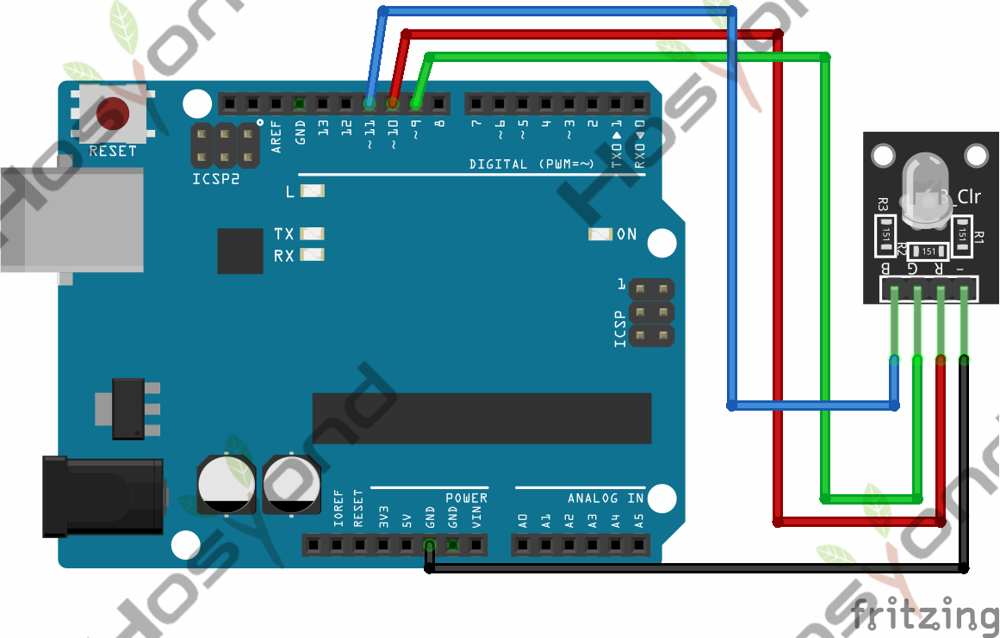
🔌 Wiring Diagram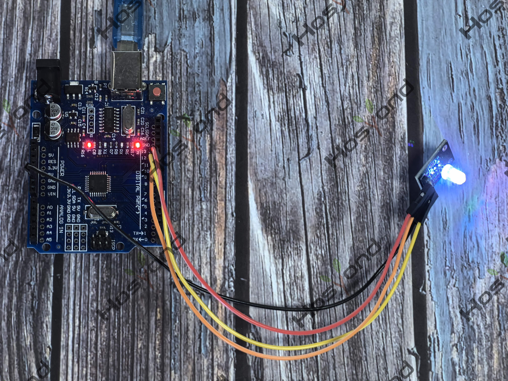
📸 Photo / Output
This is a full-color LED module, which contains 3 basic colors－red, green and blue. They can be seen as separate LED lights. After programming, you can turn them on and off by sequence or can also use PWM analog output to mix three colors to generate different colors.
- • Color: Red, Green, and Blue
- • Brightness: High
- • Voltage: 5V
📄 1.Rgb_Led.ino
int redpin = 11; //select the pin for the red LED
int bluepin = 10; // select the pin for the blue LED
int greenpin = 9; // select the pin for the green LED
int val;
void setup() {
pinMode(redpin, OUTPUT);
pinMode(bluepin, OUTPUT);
pinMode(greenpin, OUTPUT);
}
void loop()
{ for (val = 255; val > 0; val--)
{ analogWrite(11, val);
analogWrite(10, 255 - val);
analogWrite(9, 128 - val);
delay(1);
}
for (val = 0; val < 255; val++)
{ analogWrite(11, val);
analogWrite(10, 255 - val);
analogWrite(9, 128 - val);
delay(1);
}
}
#2
SMD RGB
Sensors
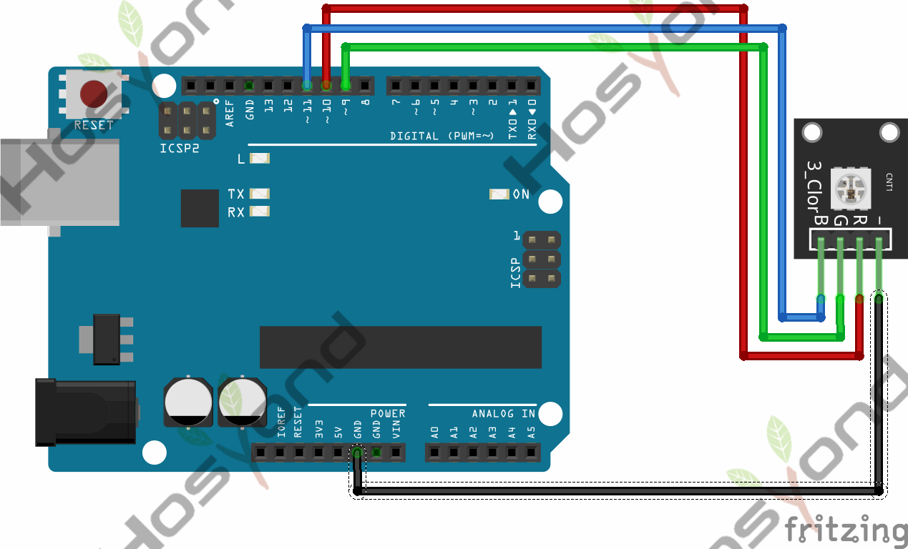
🔌 Wiring Diagram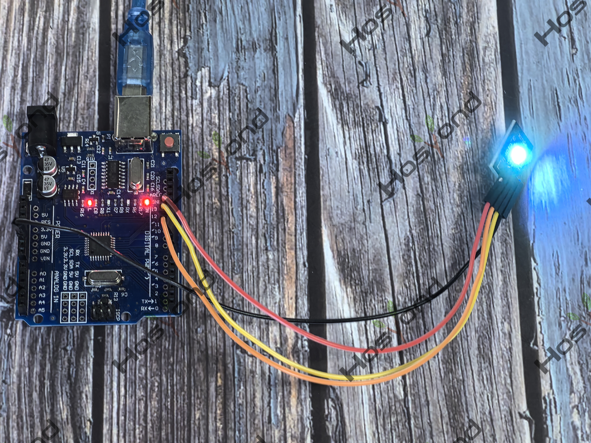
📸 Photo / Output
This is a full-color LED module, which contains 3 basic colors－red, green and blue. They can be seen as separate LED lights. After programming, you can turn them on and off by sequence or can also use PWM analog output to mix three colors to generate different colors.
- • Color: Red, Green, and Blue
- • Brightness: High
- • Voltage: 5V
📄 2.Smd_Rgb.ino
int redpin = 11; //select the pin for the red LED
int bluepin = 10; // select the pin for the blue LED
int greenpin = 9; // select the pin for the green LED
int val;
void setup() {
pinMode(redpin, OUTPUT);
pinMode(bluepin, OUTPUT);
pinMode(greenpin, OUTPUT);
}
void loop()
{ for (val = 255; val > 0; val--)
{ analogWrite(11, val);
analogWrite(10, 255 - val);
analogWrite(9, 128 - val);
delay(1);
}
for (val = 0; val < 255; val++)
{ analogWrite(11, val);
analogWrite(10, 255 - val);
analogWrite(9, 128 - val);
delay(1);
}
}
#3
7 Color Flash
Lighting / LED
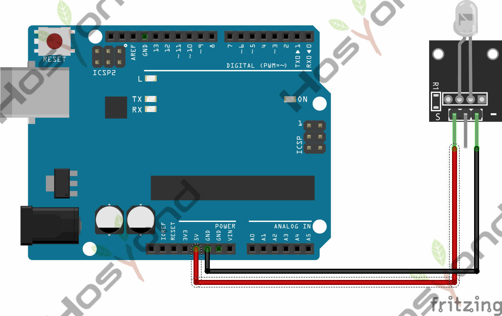
🔌 Wiring Diagram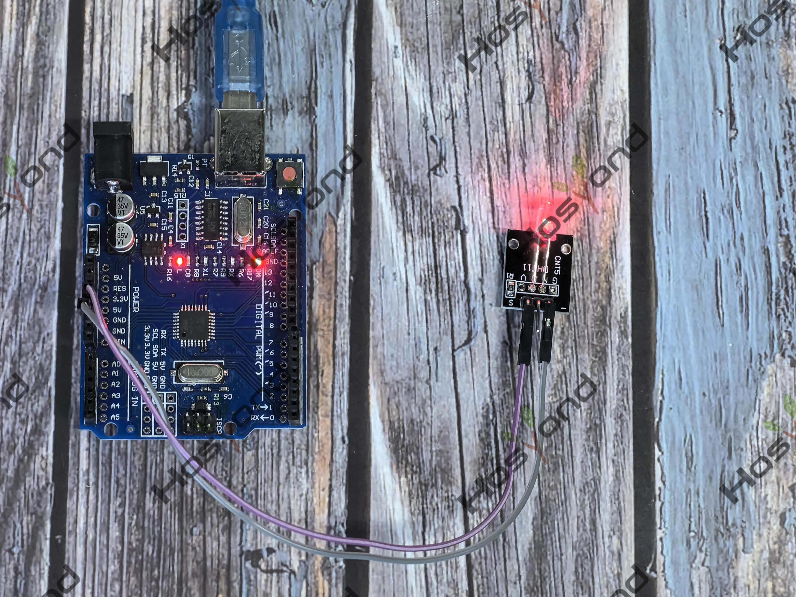
📸 Photo / Output
#4
Laser Module
Optical & Distance
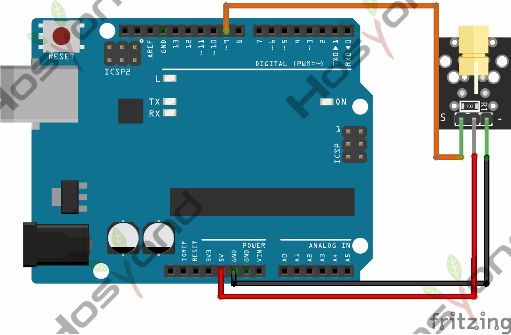
🔌 Wiring Diagram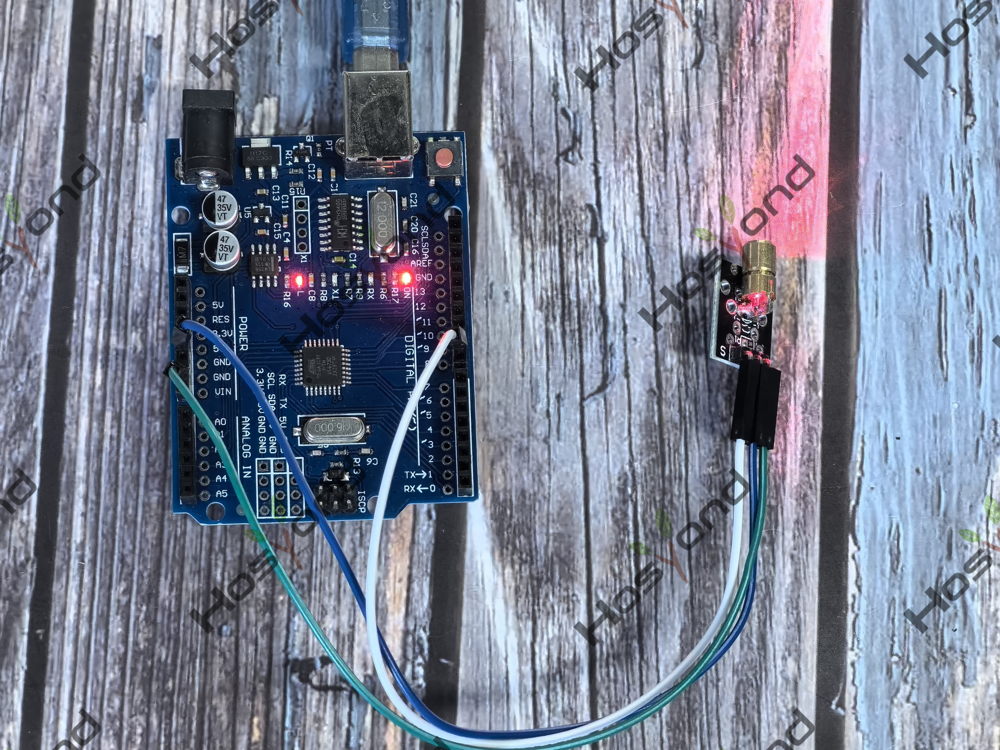
📸 Photo / Output
The KY-008 is a laser transmitter module that creates a dot-shaped laser beam
that can be used as a laser pointer or to create mini laser shows.
- • Wavelength: 650 nm (Red)
- • Laser Power: 5 mW
- • Operating Voltage: 3-5 volts
📄 4.Laser_Module.ino
void setup() {
pinMode(9, OUTPUT);
}
void loop() {
digitalWrite(9, HIGH);
delay(300);
digitalWrite(9, LOW);
delay(700);
}
#5
Digital IR Transmitters
Optical & Distance
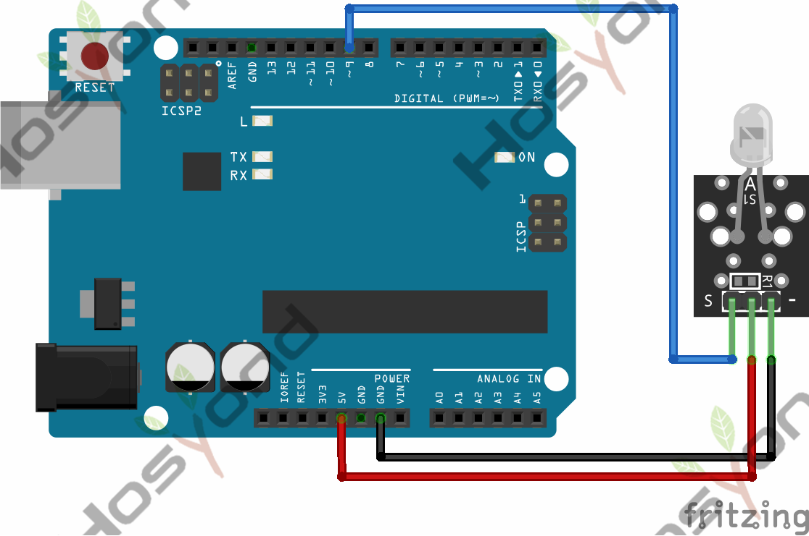
🔌 Wiring Diagram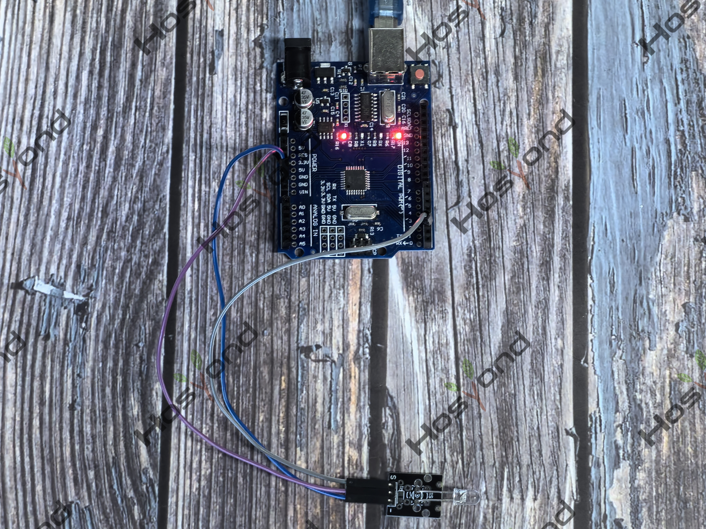
📸 Photo / Output
IR transmitter module is designed for IR communication, which is widely used for
operating the television device from a short line-of-sight distance. Since
infrared (IR) remote control uses light, it requires line of sight to operate
the destination device. The signal can, however, be reflected by mirrors, just
like any other light sources. Infrared receivers also tend to have a more or
less limited operating angle, which mainly depends on the optical characteristics
of the phototransistor. However, it’s easy to increase the operating angle
using a matte transparent object in front of the receiver.
- • Power Supply: 3-5V
- • Infrared center frequency: 850nm-940nm
- • Infrared emission angle: about 20 degrees
📄 5.Digital_Ir_Transmitters.ino
int led = 3;
void setup() {
pinMode(led, OUTPUT);
}
void loop() {
digitalWrite(led, HIGH);
delay(1000);
digitalWrite(led, LOW);
delay(1000); }
#6
Digital IR Receiver
Optical & Distance
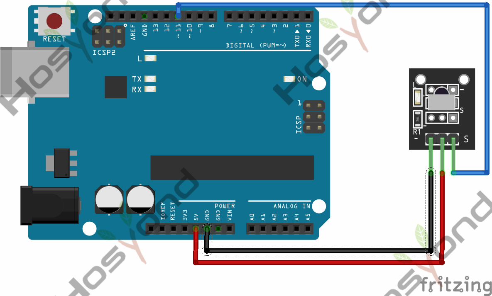
🔌 Wiring Diagram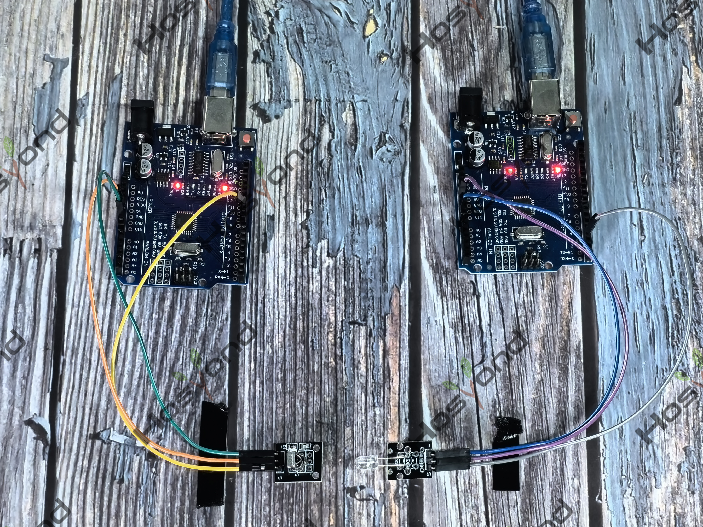
📸 Photo / Output
IR is widely used in remote control. With this IR receiver, Arduino project is
able to receive command from any IR remoter controllers if you have the right
decoder. Well, it will be also easy to make your own IR controller using IR
transmitter.
- • Power Supply: 5V
- • Interface: Digital
- • Modulation Frequency: 38Khz
📄 6.Digital_Ir_Receiver1.ino
#include <IRremote.h>
int IR_PIN = 3;
IRsend irsend(IR_PIN);
void setup()
{}
void loop() {
irsend.sendRC5(0x0, 8); //send 0x0 code (8 bits)
delay(200);
irsend.sendRC5(0x1, 8);
delay(200); }
#7
DHT11 Module
Environmental
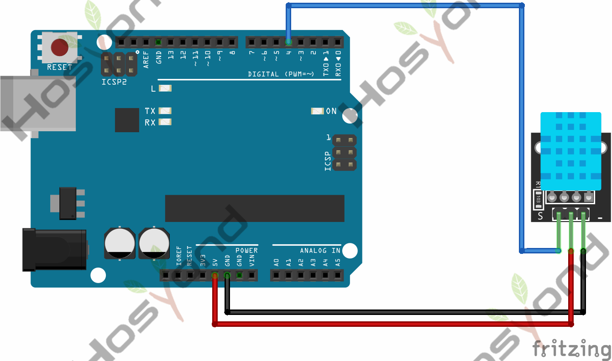
🔌 Wiring Diagram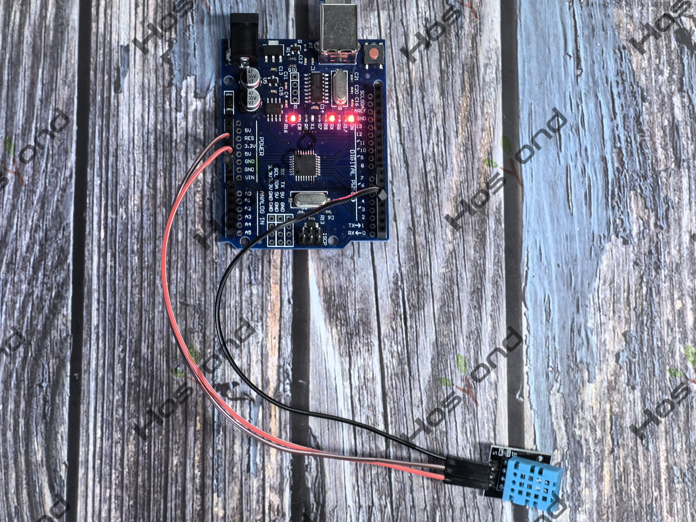
📸 Photo / Output
This DHT11 sensor features calibrated digital signal output with the temperature
and humidity sensor complex. Its technology ensures high reliability and excellent
long-term stability. A high-performance 8-bit microcontroller is connected on the
sensor. This sensor includes a resistive element and a sense of wet NTC temperature
measuring devices.It has advantages of excellent quality, fast response, anti-interference
ability and high cost performance.
- • Supply Voltage: +5 V
- • Temperature range: 0-50 °C error of ± 2 °C
- • Humidity: 20-90% RH ± 5% RH error
📄 DHT11.ino
#include <SimpleDHT.h>
int pinDHT11 = 2;
SimpleDHT11 dht11;
void setup() {
Serial.begin(9600);
}
void loop() {
// start working...
Serial.println("=================================");
Serial.println("Sample DHT11...");
// read with raw sample data.
byte temperature = 0;
byte humidity = 0;
byte data[40] = {0};
if (dht11.read(pinDHT11, &temperature, &humidity, data)) {
Serial.print("Read DHT11 failed");
return;
}
Serial.print("Sample RAW Bits: ");
for (int i = 0; i < 40; i++) {
Serial.print((int)data[i]);
if (i > 0 && ((i + 1) % 4) == 0) {
Serial.print(' ');
}
}
Serial.println("");
Serial.print("Sample OK: ");
Serial.print((int)temperature); Serial.print(" *C, ");
Serial.print((int)humidity); Serial.println(" %");
// DHT11 sampling rate is 1HZ.
delay(1000);
}
#8
Double Color Led
Lighting / LED
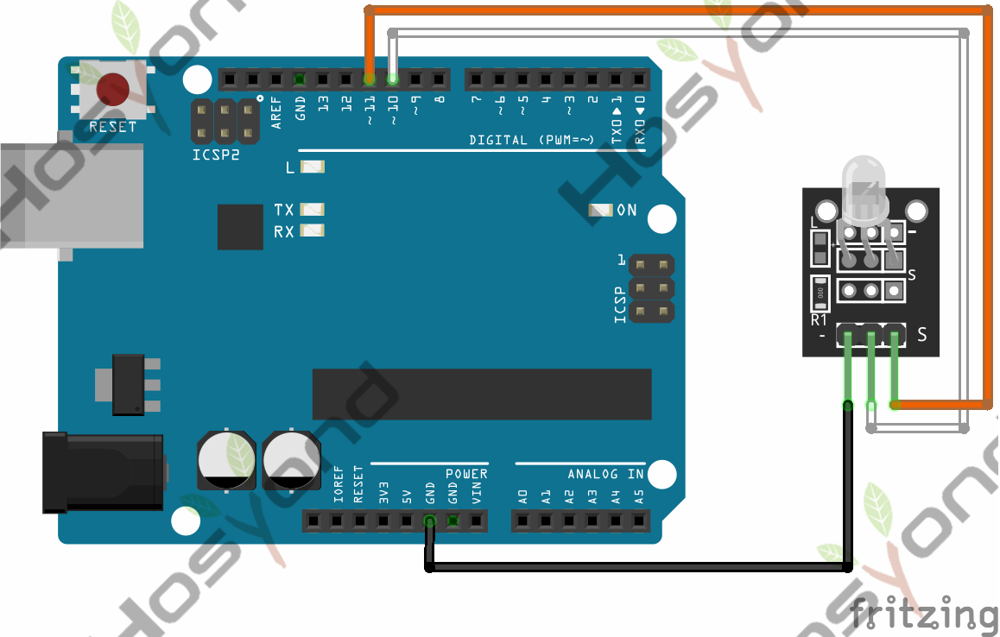
🔌 Wiring Diagram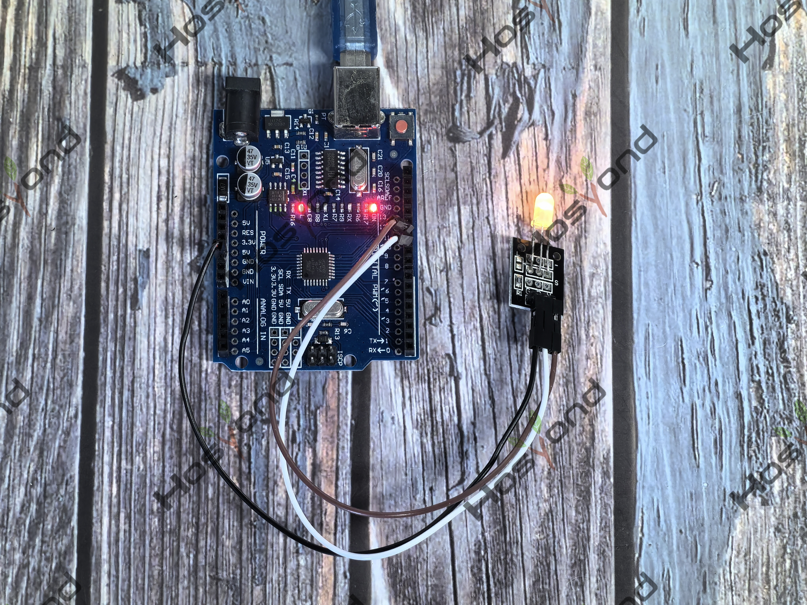
📸 Photo / Output
The KY-011 Two Color LED module emits red and green light. You can adjust the
intensity of each color using PWM.
- • Operating Voltage 2.0v ~ 2.5v
- • Working Current 10mA
- • Diameter 3mm
📄 8.Double_Color_Led.ino
int greenpin = 11; // pin for green signal
int redpin = 10; // pin for red signal
int val;
void setup() {
pinMode(redpin, OUTPUT);
pinMode(greenpin, OUTPUT);
}
void loop() {
for(val = 255; val > 0; val--) {
analogWrite(redpin, val); //dim red
analogWrite(greenpin, 255 - val); // brighten green
delay(15);
}
for(val = 0; val < 255; val++) {
analogWrite(redpin, val); //brighten red
analogWrite(greenpin, 255 - val); //dim green
delay(15);
}
}
#9
Mini Double Color Led
Lighting / LED
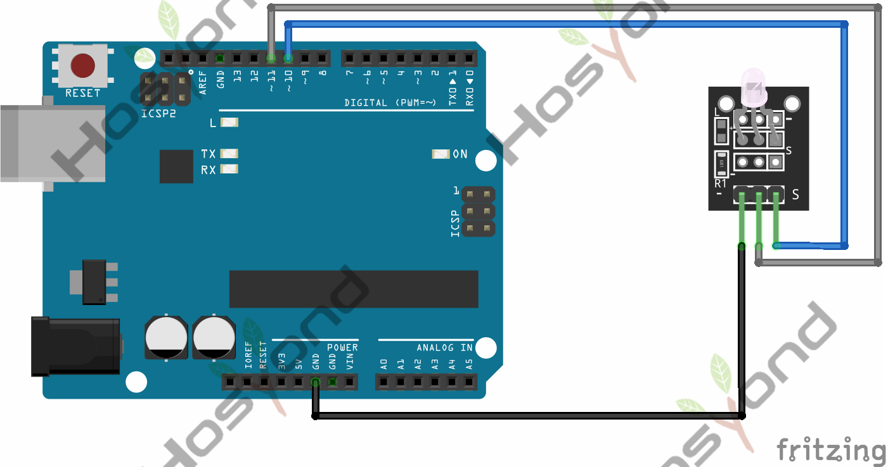
🔌 Wiring Diagram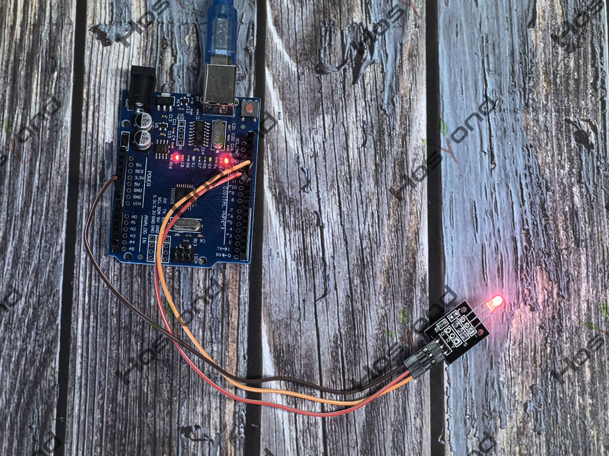
📸 Photo / Output
The KY-011 Two Color LED module emits red and green light. You can adjust the
intensity of each color using PWM.
- • Operating Voltage 2.0v ~ 2.5v
- • Working Current 10mA
- • Diameter 3mm
📄 9.Mini_Double_Color_Led.ino
int greenpin = 11; // pin for green signal
int redpin = 10; // pin for red signal
int val;
void setup() {
pinMode(redpin, OUTPUT);
pinMode(greenpin, OUTPUT);
}
void loop() {
for(val = 255; val > 0; val--) {
analogWrite(redpin, val); //dim red
analogWrite(greenpin, 255 - val); // brighten green
delay(15);
}
for(val = 0; val < 255; val++) {
analogWrite(redpin, val); //brighten red
analogWrite(greenpin, 255 - val); //dim green
delay(15);
}
}
#10
Magical Light Cup
Sensors
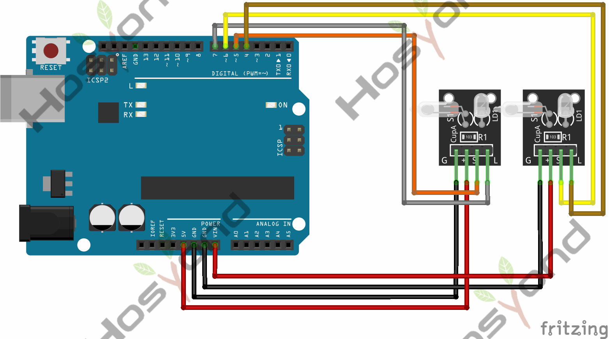
🔌 Wiring Diagram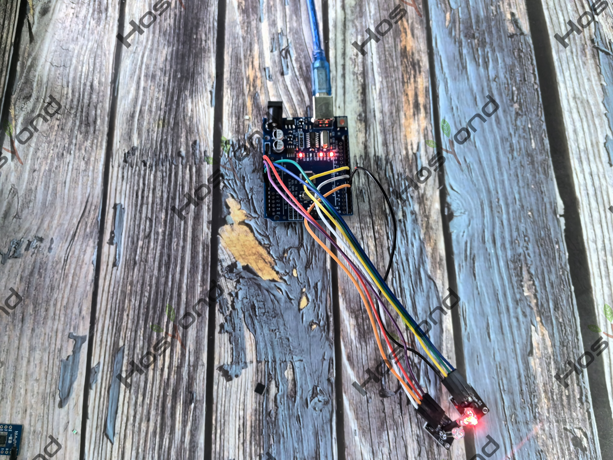
📸 Photo / Output
Magic light cup module is able to interact with ARDUINO. The principle is based
on PWM dimming.The mercury switch on the module can provide a digital signal and
trigger PWM regulation. The brightness of two modules will be changed together
through the program design, finally you can see the changing effect that two set
of cups are pouring the light.
- • Supply Voltage: 3.3V to 5V
- • Interface: Digital
📄 Magic_light_cup_module.ino
int LedPinA = 5;
int LedPinB = 6;
int ButtonPinA = 7;
int ButtonPinB = 4;
int buttonStateA = 0;
int buttonStateB = 0;
int brightnessA = 0;
int brightnessB= 255;
void setup()
{
Serial.begin(9600);
pinMode(LedPinA, OUTPUT);
pinMode(LedPinB, OUTPUT);
pinMode(ButtonPinA, INPUT);
pinMode(ButtonPinB, INPUT);
}
void loop()
{
buttonStateA = digitalRead(ButtonPinA);
if (buttonStateA == HIGH && brightnessA != 255)
{
brightnessA ++;
}
if (buttonStateA == LOW && brightnessA != 0)
{
brightnessA --;
}
analogWrite(LedPinB, brightnessA);
Serial.print(brightnessA);
Serial.print(" ");
buttonStateB = digitalRead(ButtonPinB);
if (buttonStateB == HIGH && brightnessB != 0)
{
brightnessB --;
}
if (buttonStateB == LOW && brightnessB != 255)
{
brightnessB++;
}
analogWrite(LedPinA, brightnessB);
Serial.println(brightnessB);
delay(5);
}
#11
Active Buzzer
Audio / Sound
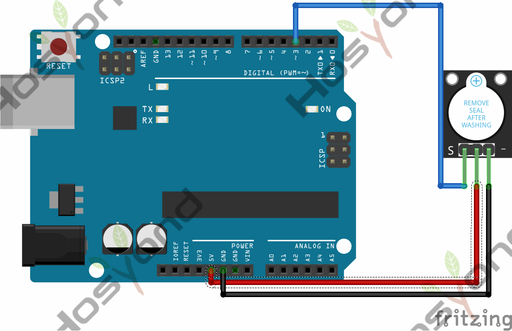
🔌 Wiring Diagram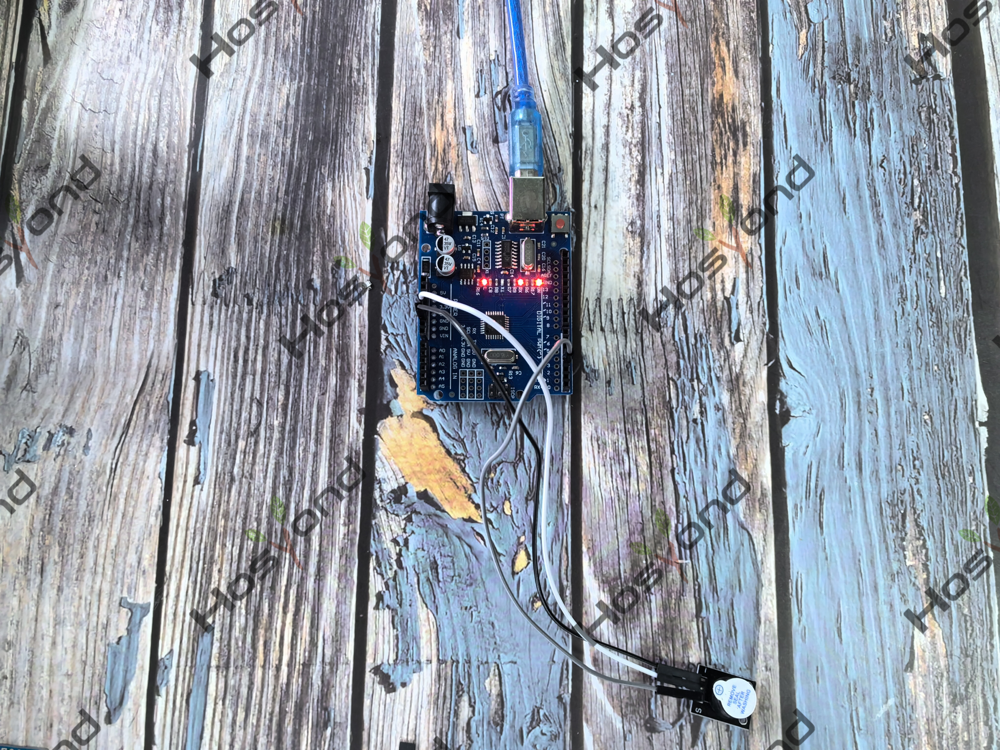
📸 Photo / Output
Here is the simplest sound making module. You can use high/low level to drive it.
- • Working voltage: 3.3-5v
- • Interface type: digital
- • Size: 30*20mm
📄 Active_buzzer_Module.ino
int buzzPin =3; //Connect Buzzer on Digital Pin3
void setup()
{
pinMode(buzzPin, OUTPUT);
}
void loop()
{
digitalWrite(buzzPin, HIGH);
delay(1000);
digitalWrite(buzzPin, LOW);
delay(1000);
}
#12
Passtive Buzzer
Audio / Sound
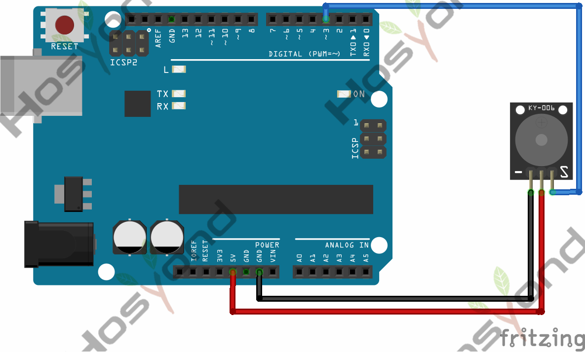
🔌 Wiring Diagram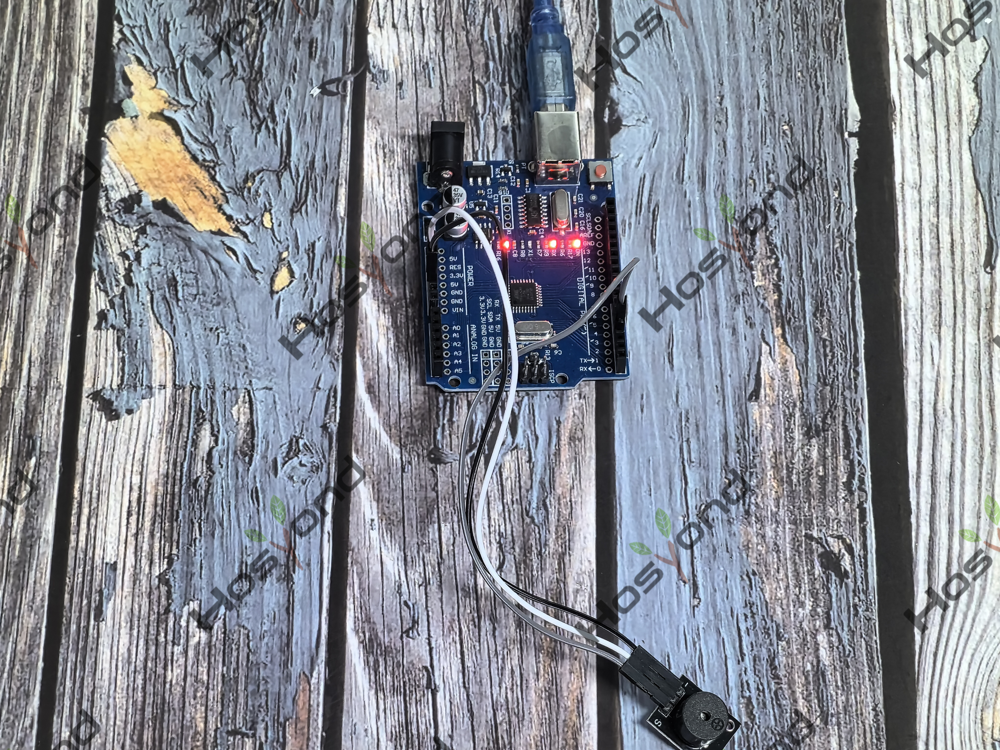
📸 Photo / Output
We can use Arduino to make many interactive works of which the most commonly used
is acoustic-optic display. The circuit in this experiment can produce sound.
- • Working voltage: 3.3-5v
- • Interface type: digital
- • Size: 30*20mm
📄 Passtive_Buzzer.ino
int buzzer=3;//set digital IO pin of the buzzer
void setup()
{
pinMode(buzzer,OUTPUT);// set digital IO pin pattern, OUTPUT to be output
}
void loop()
{ unsigned char i,j;//define variable
while(1)
{ for(i=0;i<80;i++)// output a frequency sound
{ digitalWrite(buzzer,HIGH);// sound
delay(1);//delay1ms
digitalWrite(buzzer,LOW);//not sound
delay(1);//ms delay
}
for(i=0;i<100;i++)// output a frequency sound
{
digitalWrite(buzzer,HIGH);// sound
digitalWrite(buzzer,LOW);//not sound
delay(2);//2ms delay
}
}
}
#13
Analog Temperature
Environmental
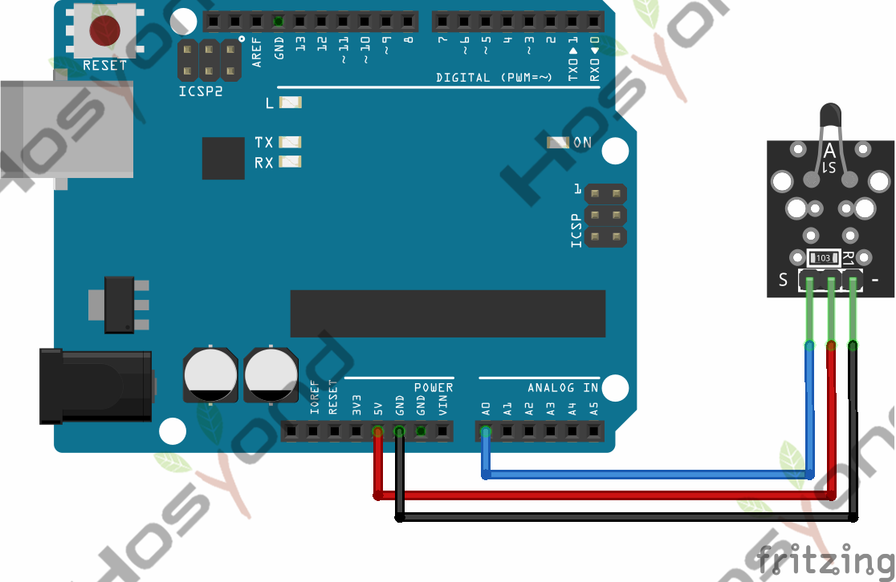
🔌 Wiring Diagram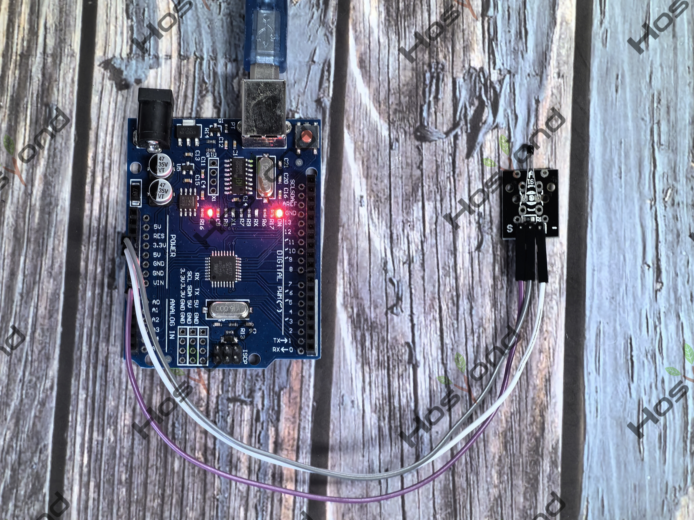
📸 Photo / Output
This module is based on the working principle of a thermistor (resistance varies
with temperature change in the environment).It can sense temperature changes in
the surrounding and send the data to the analog IO of Arduino board. All we need
to do is to convert the sensor’s output data into degrees Celsius temperature via
simple programming, finally displaying it on the monitor.
- • Interface type: analog
- • Working voltage: 5V
- • Temperature range: -55℃～315℃
📄 temp.ino
int ThermistorPin = A0;
int Vo;
float R1 = 10000; // value of R1 on board
float logR2, R2, T;
float c1 = 0.001129148, c2 = 0.000234125, c3 = 0.0000000876741; //steinhart-hart coeficients for thermistor
void setup() {
Serial.begin(9600);
}
void loop() {
Vo = analogRead(ThermistorPin);
// R2 = R1 * (1023.0 / (float)Vo - 1.0); //calculate resistance on thermistor
R2 = R1 / ((1023.0 / (float)Vo) - 1.0);
logR2 = log(R2);
T = (1.0 / (c1 + c2*logR2 + c3*logR2*logR2*logR2)); // temperature in Kelvin
T = T - 273.15; //convert Kelvin to Celcius
// T = (T * 9.0)/ 5.0 + 32.0; //convert Celcius to Farenheit
Serial.print("Temperature: ");
Serial.print(T);
Serial.println(" C");
delay(500);
}
#14
Photoresistor Module
Optical & Distance
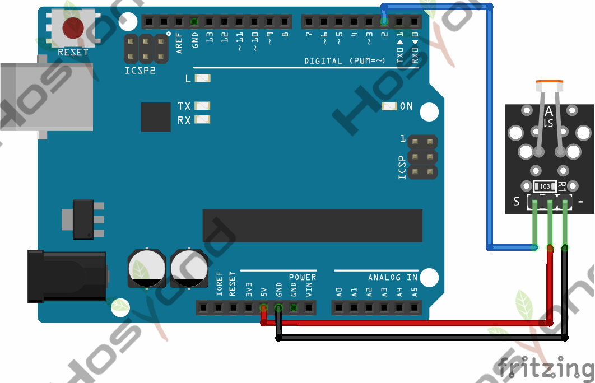
🔌 Wiring Diagram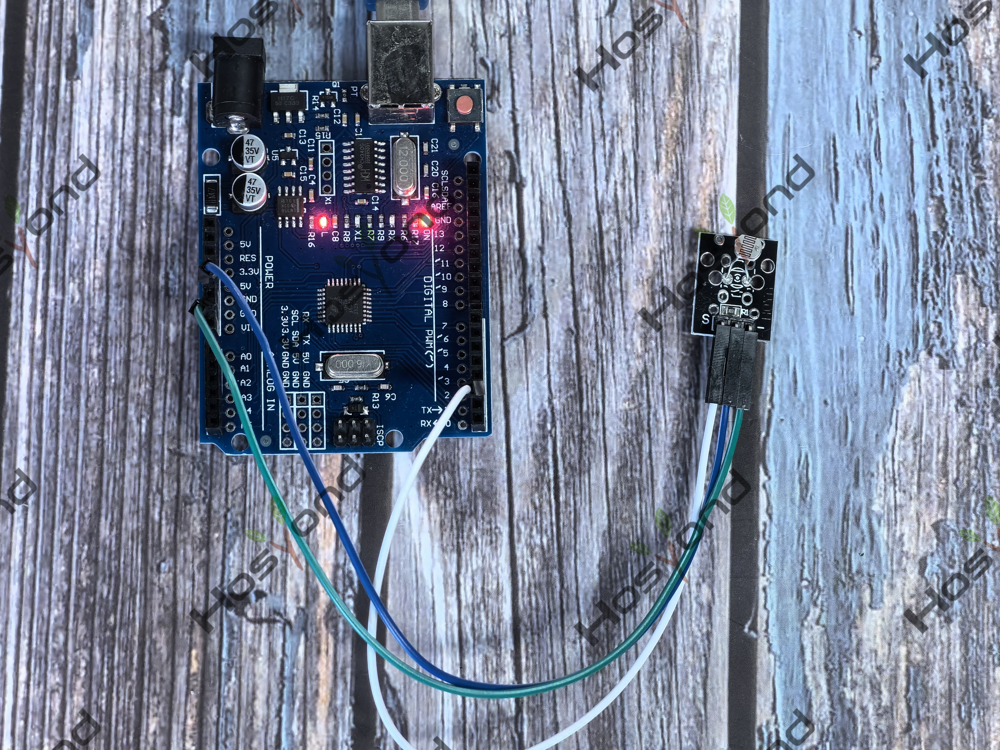
📸 Photo / Output
Photocell is commonly seen in our daily life and is mainly used in intelligent
switch, also in common electronic design. To make it easier and more effective,
we supply the corresponding modules.
- • Direct module hookup
📄 Photoresistor_Module.ino
int sensorPin = 2;
int value = 0;
int maxValue = 1023; // The maximum value returned by Arduino's analogRead function
void setup() {
Serial.begin(9600);
}
void loop() {
value = analogRead(sensorPin);
// Invert ADC value
value = maxValue - value;
// You can invert it if you want
// value = -value + maxValue;
Serial.println(value, DEC);
delay(50);
}
#15
DS18B20_sensor
Sensors
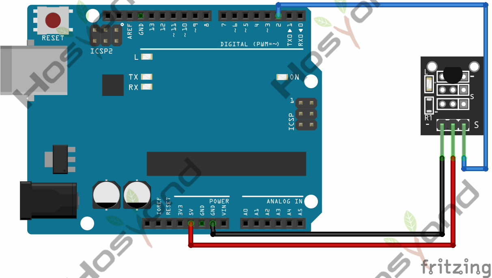
🔌 Wiring Diagram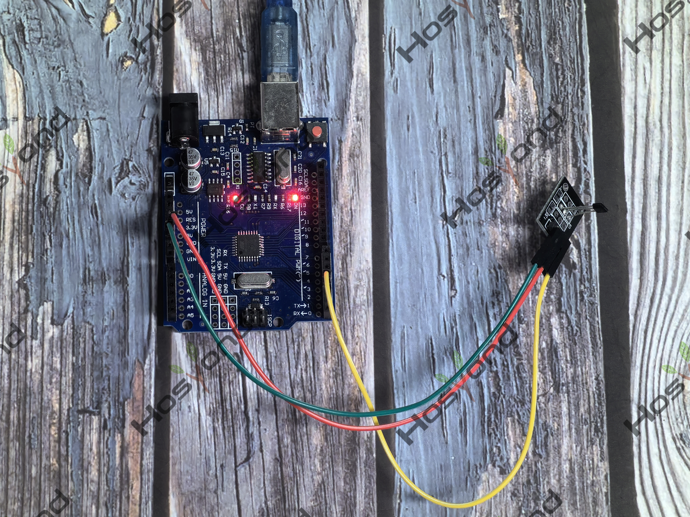
📸 Photo / Output
The DS18B20 temperature sensor is a one-wire digital temperature sensor. This means
that it just requires one data line (and GND) to communicate with the Arduino.
- • 55°C to +85°C temperature measurement range with good accurac
- • 1-wire interface to save on MCU pins
- • LED to indicate module communications
📄 DS18B20_sensor_module_1.ino
#include <OneWire.h>
int DS18S20_Pin = 2; //DS18S20 Signal pin on digital 2
//Temperature chip i/o
OneWire ds(DS18S20_Pin); // on digital pin 2
void setup(void) {
Serial.begin(9600);
}
void loop(void) {
float temperature = getTemp();
Serial.println(temperature);
delay(100); //just here to slow down the output so it is easier to read
}
float getTemp(){
//returns the temperature from one DS18S20 in DEG Celsius
byte data[12];
byte addr[8];
if ( !ds.search(addr)) {
//no more sensors on chain, reset search
ds.reset_search();
return -1000;
}
if ( OneWire::crc8( addr, 7) != addr[7]) {
Serial.println("CRC is not valid!");
return -1000;
}
if ( addr[0] != 0x10 && addr[0] != 0x28) {
Serial.print("Device is not recognized");
return -1000;
}
ds.reset();
ds.select(addr);
ds.write(0x44,1); // start conversion, with parasite power on at the end
byte present = ds.reset();
ds.select(addr);
ds.write(0xBE); // Read Scratchpad
for (int i = 0; i < 9; i++) { // we need 9 bytes
data[i] = ds.read();
}
ds.reset_search();
byte MSB = data[1];
byte LSB = data[0];
float tempRead = ((MSB << 8) | LSB); //using two's compliment
float TemperatureSum = tempRead / 16;
return TemperatureSum;
}
#16
Shock Sensor
Motion / Vibration
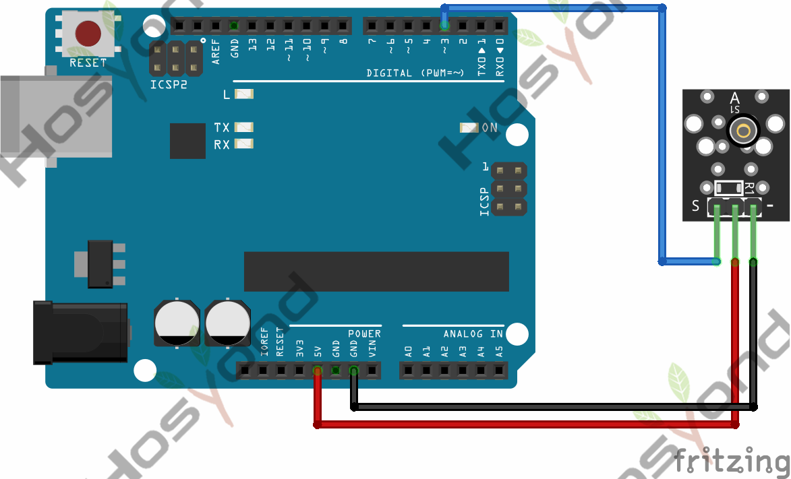
🔌 Wiring Diagram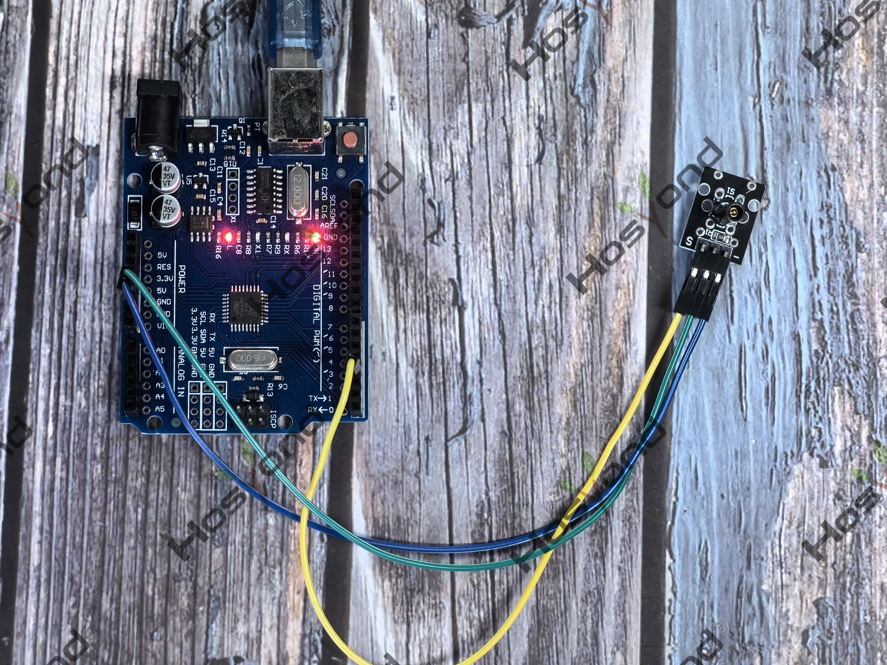
📸 Photo / Output
The KY-002 Vibration Switch Module detects shaking and knocking. When the module
is moved, a spring mechanism will close the circuit sending a short high signal.
- • Operating Voltage 5V
- • Board Dimensions 18.5mm x 15mm [0.728in x 0.591in]
📄 shock.ino
int Led = 13; // define the LED Pin
int shock = 3; // define the sensor Pin
int val; // define a numeric variable val
void setup () {
pinMode (Led, OUTPUT); // LED pin as output
pinMode (shock, INPUT); // input from KY-002 sensor
}
void loop () {
val = digitalRead (shock); // read the value from KY-002
if (val == HIGH ) {// when sensor detects shock, LED flashes
digitalWrite(Led, LOW);
} else {
digitalWrite (Led, HIGH);
}
}
#17
Pulse Rate Monitor
Sensors
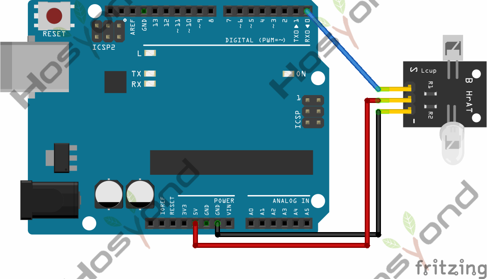
🔌 Wiring Diagram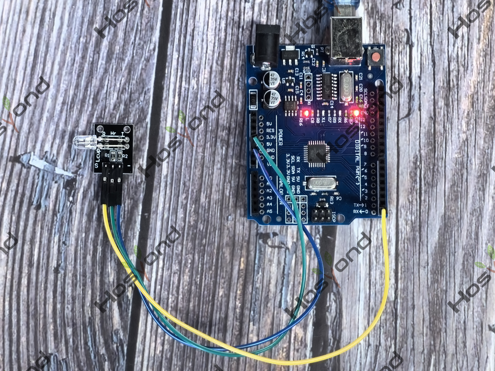
📸 Photo / Output
This module makes use of a ultra-clear infrared LED and a phototransistor to
detect the pulse in your finger. The red LED will flash in time with your pulse.
- • Connect
- • .. image:: /img/connect/17_bb.png
📄 17.Pulse_Rate_Monitor.ino
int ledPin = 13;
int sensorPin = 0;
double alpha = 0.75;
int period = 20;
double change = 0.0;
void setup()
{
pinMode(ledPin, OUTPUT);
Serial.begin(115200);
}
void loop()
{
static double oldValue = 0;
static double oldChange = 0;
int rawValue = analogRead(sensorPin);
double value = alpha * oldValue + (1 - alpha) * rawValue;
Serial.print(rawValue);
Serial.print(",");
Serial.println(value);
oldValue = value;
delay(period);
}
#18
Button
Controls & Switches
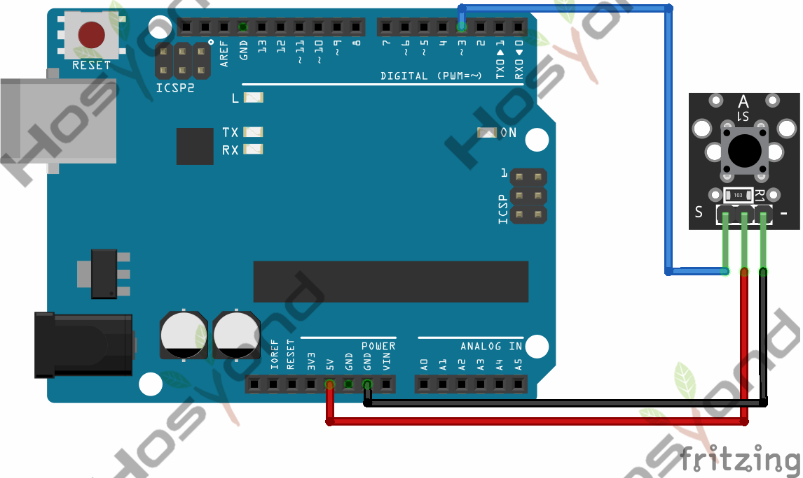
🔌 Wiring Diagram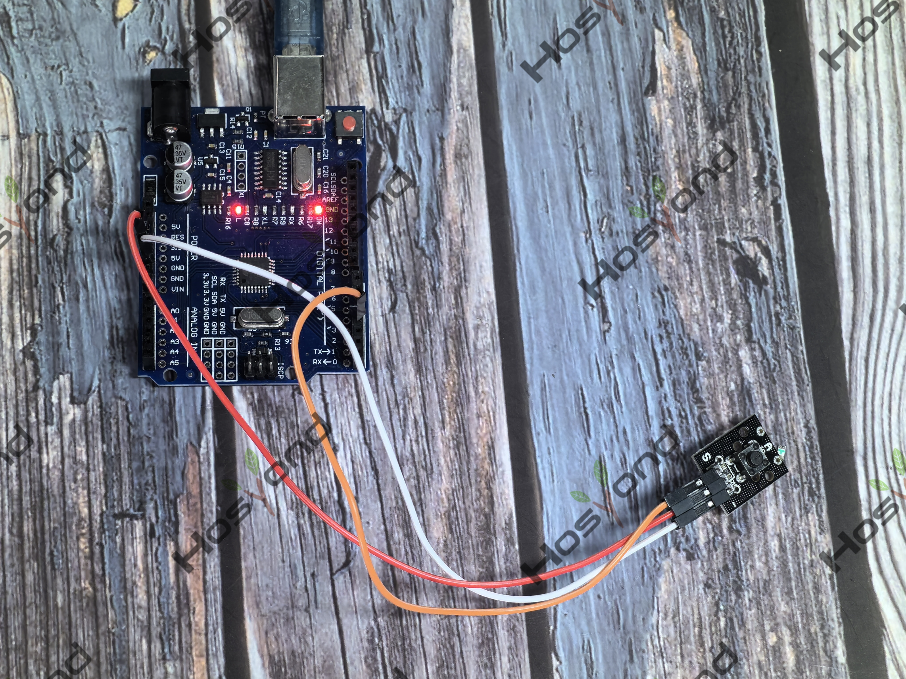
📸 Photo / Output
This is a basic button module. You can simply plug it into an IO shield to have
your first try of Arduino.
- • Supply Voltage: 3.3V to 5V
- • Interface: Digital
- • Dimensions: 30*20mm
📄 18.Button.ino
int led = 13; //Define the LED pin
int buttonpin = 3; //Define the push button pin
int val; //Define a numeric variable
int ledState = LOW; //LED status variable, the initial value is off
void setup() {
pinMode(led,OUTPUT);
pinMode(buttonpin,INPUT);
digitalWrite(led, ledState); //Set the initial LED state according to ledState
}
void loop() {
val = digitalRead(buttonpin); // Read button status
if(val==LOW) // If the button is pressed
{
ledState = HIGH; // Set ledState to HIGH(on)
}
else
{
ledState = LOW; // Set ledState to LOW
}
digitalWrite(led, ledState);
}
#19
Rotary Encoder
Controls & Switches
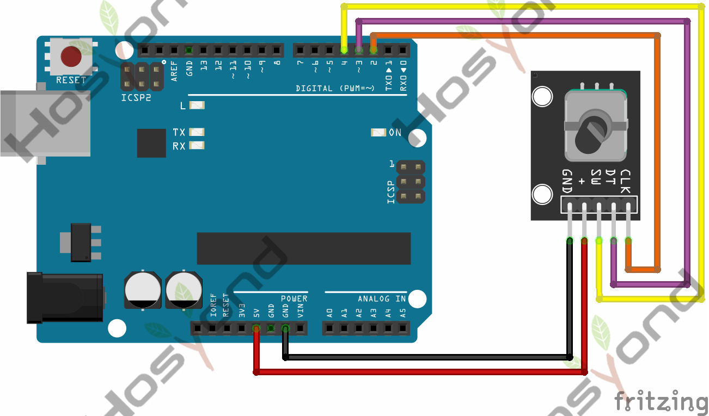
🔌 Wiring Diagram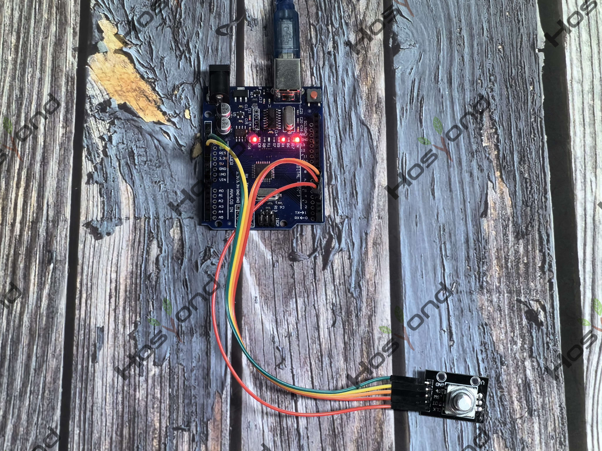
📸 Photo / Output
The rotary encoder can count the pulse outputting times during the process of
rotation in positive and reverse direction.
- • Power Supply: 5V
- • Interface: Digital
- • Size: 30*20mm
📄 19.Rotary_Encoder.ino
#define SERIAL_BAUDRATE 115200
#define CLK_PIN 2 // define connection pin
#define DT_PIN 3
#define SW_PIN 4
#define interruptA 0 // UNO pin2 is interrupt 0，refer to the official website of other board
volatile long count = 0;
unsigned long t = 0;
void setup() {
Serial.begin(SERIAL_BAUDRATE);
// when the state is down, the rotary encoder is rotated.
attachInterrupt(interruptA, rotaryEncoderChanged, FALLING);
pinMode(CLK_PIN, INPUT_PULLUP); // Input mode and enable internal pull up resistor
pinMode(DT_PIN, INPUT_PULLUP);
pinMode(SW_PIN, INPUT_PULLUP);
}
void loop() {
if(digitalRead(SW_PIN) == LOW){ // Press the switch, return to zero
count = 0;
Serial.println("count reset to 0");
delay(300);
}
}
void rotaryEncoderChanged(){ // when CLK_PIN is FALLING
unsigned long temp = millis();
if(temp - t < 200) // remove bounce
return;
t = temp;
// DT_PIN state represents a forward or reverse.
count += digitalRead(DT_PIN) == HIGH ? 1 : -1;
Serial.println(count);
}
#20
Joystick
Controls & Switches
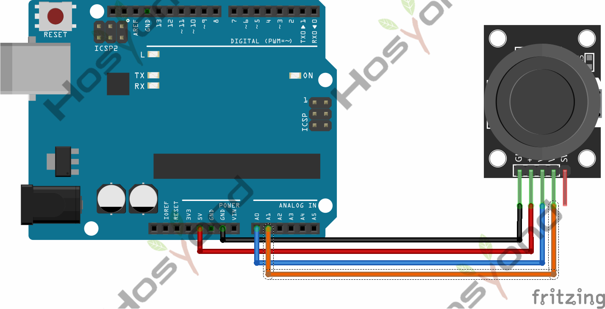
🔌 Wiring Diagram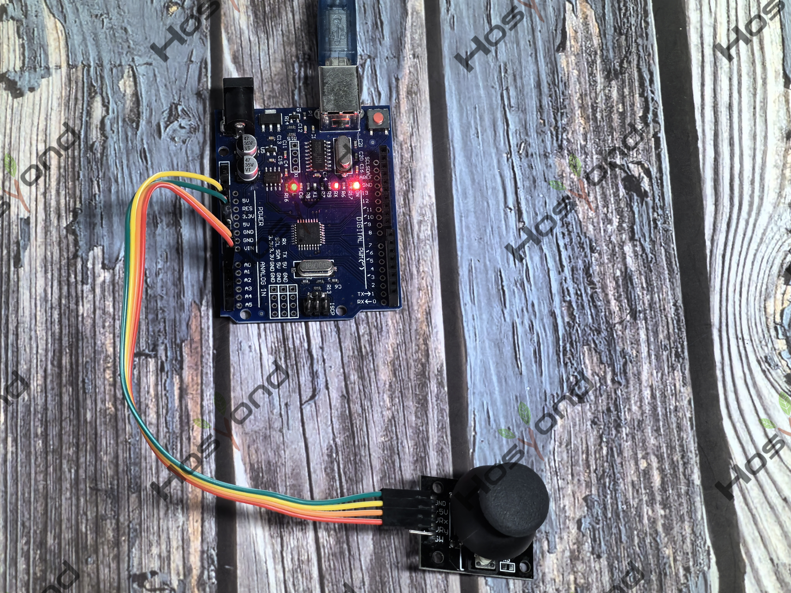
📸 Photo / Output
Lots of robot projects need joystick. This module provides an affordable solution.
- • Supply Voltage: 3.3V to 5V
- • Interface: Analog x2, Digital x1
- • Size: 40*28mm
📄 20.Joystick.ino
int value = 0;
void setup() {
pinMode(3, OUTPUT);
Serial.begin(9600);
}
void loop() {
value = analogRead(0);
Serial.print("X:");
Serial.print(value, DEC);
value = analogRead(1);
Serial.print(" | Y:");
Serial.println(value, DEC);
delay(100);
}
#21
Tilt switch
Motion / Vibration
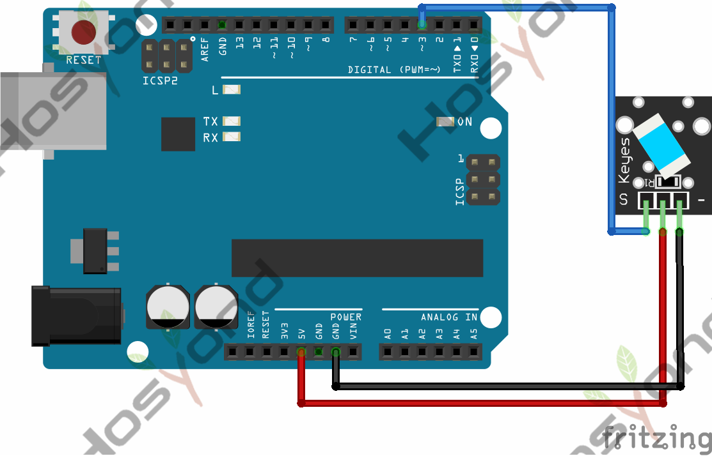
🔌 Wiring Diagram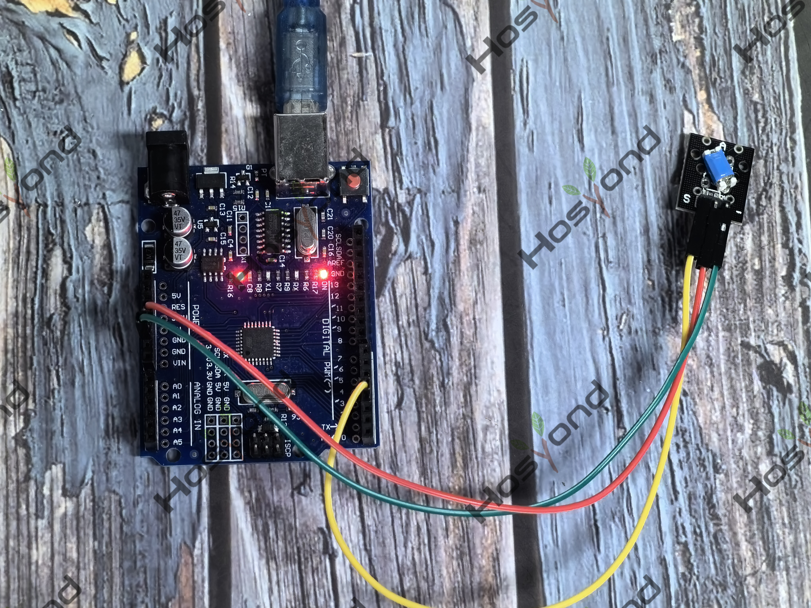
📸 Photo / Output
Tilt Sensor is a digital tilt switch. It can be used as a simple tilt switch.
- • Supply Voltage: 3.3V to 5V
- • Interface: Digital
- • Size: 30*20mm
📄 21.Tilt_Switch.ino
int ledPin = 13; // Connect LED to pin 13
int switcher = 3; // Connect Tilt sensor to Pin3
void setup()
{
pinMode(ledPin, OUTPUT); // Set digital pin 13 to output mode
pinMode(switcher, INPUT); // Set digital pin 3 to input mode
}
void loop()
{
if(digitalRead(switcher)==LOW) //Read sensor value
{
digitalWrite(ledPin, HIGH); // Turn on LED when the sensor is tilted
}
else
{
digitalWrite(ledPin, LOW); // Turn off LED when the sensor is not triggered
}
}
#22
KY-035 Hall Sensor
Magnetic
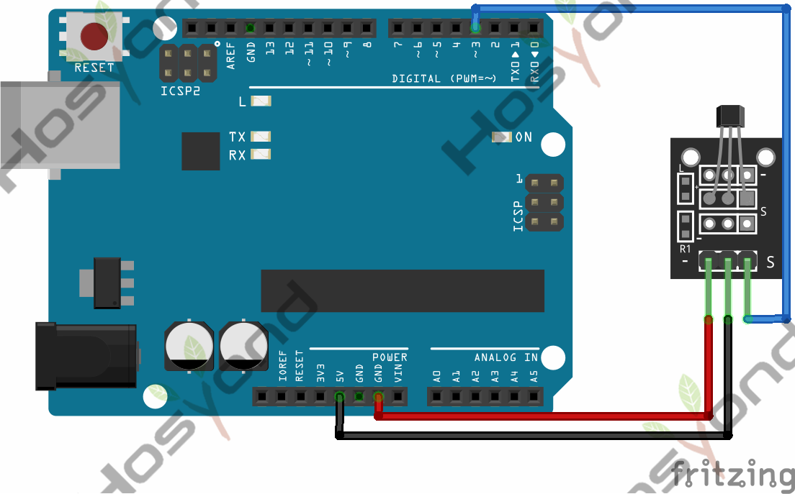
🔌 Wiring Diagram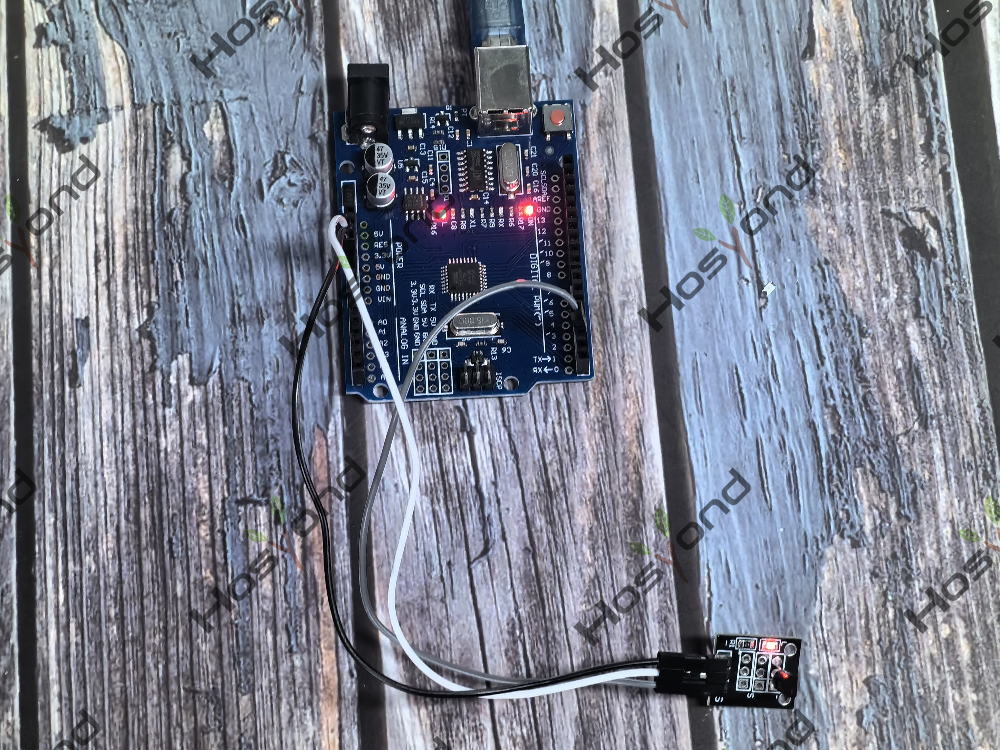
📸 Photo / Output
This is a magnetic induction sensor. It can sense the magnetic materials within
a detection range up to 3cm.
- • Sensing magnetic materials
- • Detection range: up to 3cm
- • Output: digital on/off
📄 22.Hall_Magnetic_Sensor.ino
int ledPin = 13; // choose the pin for the LED
int inputPin = 3; // Connect sensor to input pin 3
int val = 0; // variable for reading the pin status
void setup() {
pinMode(ledPin, OUTPUT); // declare LED as output
pinMode(inputPin, INPUT); // declare push button as input
}
void loop(){
val = digitalRead(inputPin); // read input value
if (val == HIGH) { // check if the input is HIGH
digitalWrite(ledPin, LOW); // turn LED OFF
} else {
digitalWrite(ledPin, HIGH); // turn LED ON
}
}
#23
TAP Module
Motion / Vibration
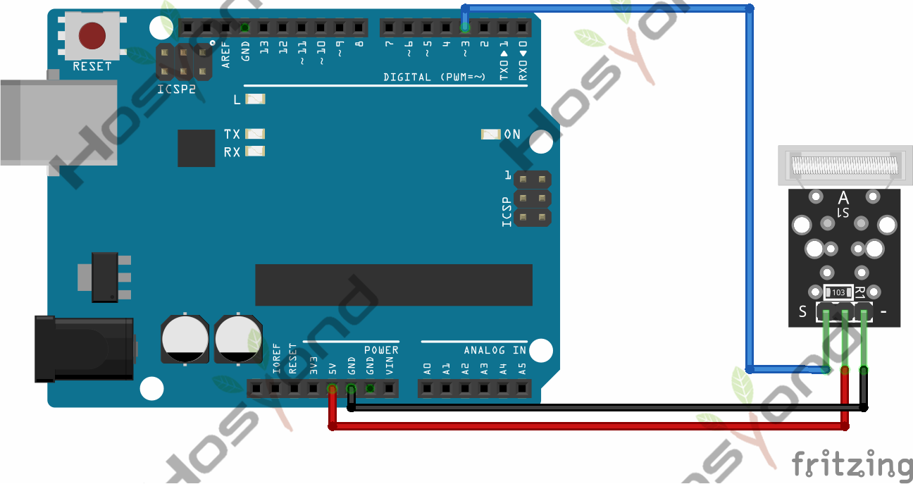
🔌 Wiring Diagram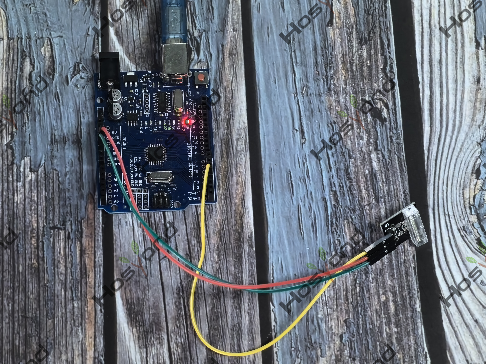
📸 Photo / Output
This module is a knock sensor. When you knock it, it can send a momentary signal.
- • Working voltage: 5V
- • Size: 30*20mm
- • Weight: 3g
📄 23.TAP_Module.ino
int Led=13;//define LED interface
int Shock=3;//define knock sensor interface
int val;//define digital variable val
void setup()
{
pinMode(Led,OUTPUT);//define LED to be output interface
pinMode(Shock,INPUT);//define knock sensor to be output interface
}
void loop()
{
val=digitalRead(Shock);//read the value of interface3 and evaluate it to val
if(val==HIGH)//when the knock sensor detect a signal, LED will be flashing
{
digitalWrite(Led,LOW);
}
else
{
digitalWrite(Led,HIGH);
}
}
#24
KY-003 Hall Sensor
Magnetic
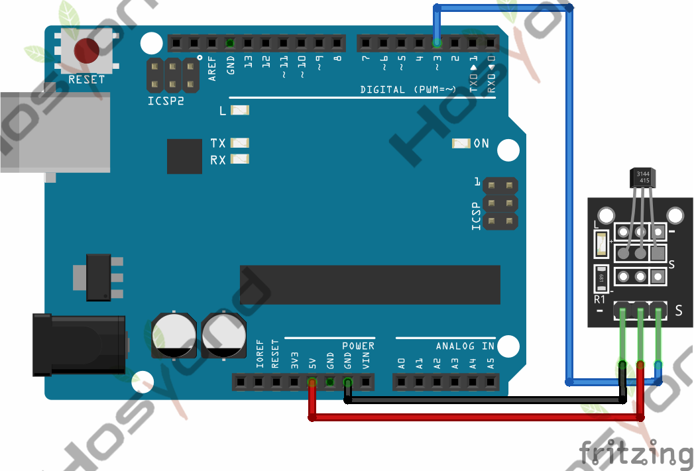
🔌 Wiring Diagram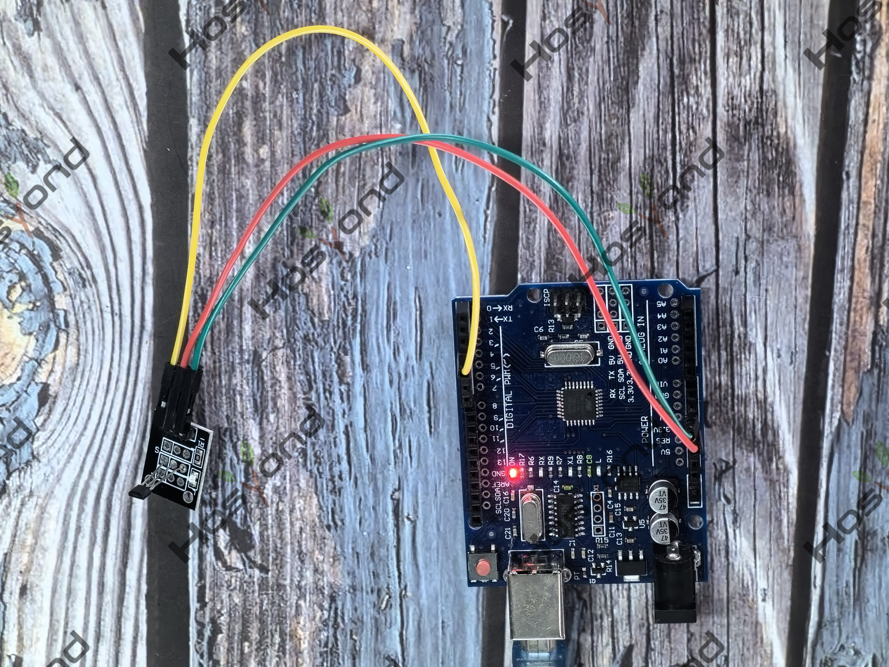
📸 Photo / Output
The KY-003 Hall Magnetic Sensor module is a switch that reacts to the presence
of a magnetic field, turning itself on or off. Compatible with popular microcont
rolers like Arduino, Raspberry Pi and ESP32.This module offers a digital output.
- • Operating Voltage 4.5V to 24V
- • Operating Temperature Range -40°C to 85°C
- • Board Dimensions 18.5mm x 15mm
📄 24.Hall_Magnetic_Sensor.ino
int led = 13;//LED pin
int sensor = 3; //sensor pin
int val; //numeric variable
void setup()
{
pinMode(led, OUTPUT); //set LED pin as output
pinMode(sensor, INPUT); //set sensor pin as input
}
void loop()
{
val = digitalRead(sensor); //Read the sensor
if(val == LOW) //when magnetic field is detected, turn led on
{
digitalWrite(led, HIGH);
}
else
{
digitalWrite(led, LOW);
}
}
#25
Mercury Tilt Switch
Motion / Vibration
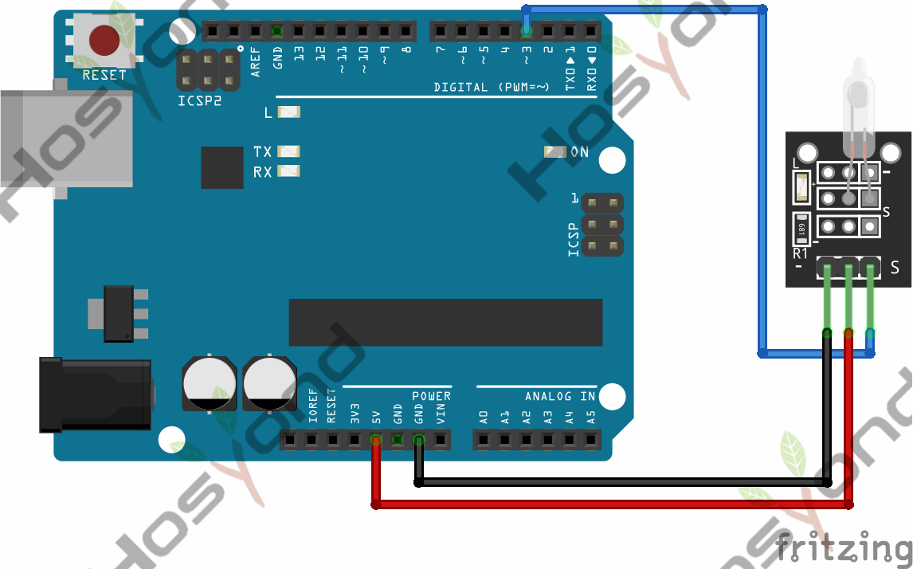
🔌 Wiring Diagram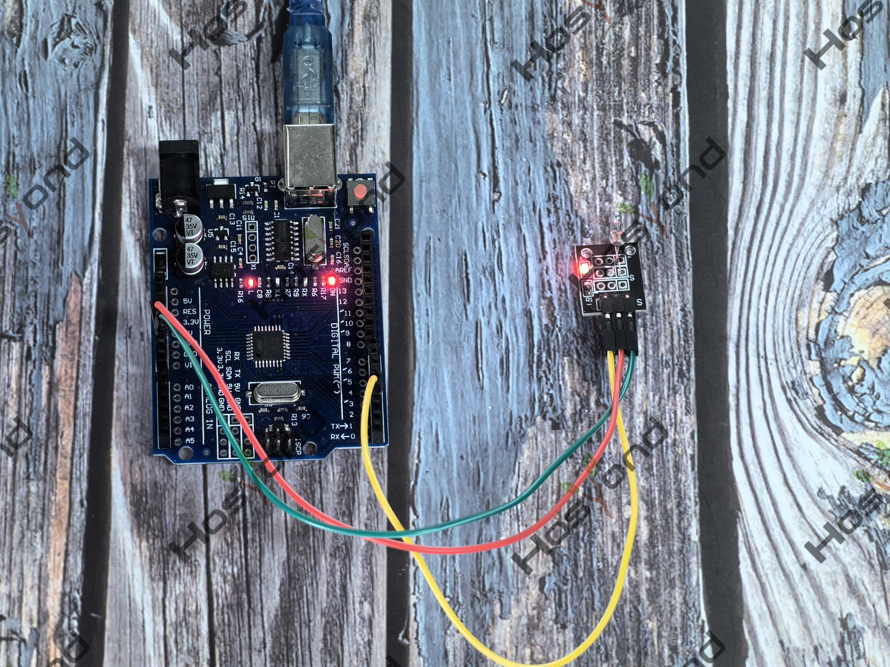
📸 Photo / Output
📄 25.Mercury_Tilt_Switch.ino
int led_pin = 13; // Define the LED interface
int switch_pin = 3; // Definition of mercury tilt switch sensor interface
int val; // Defines a numeric variable
void setup()
{
pinMode(led_pin, OUTPUT);
pinMode(switch_pin, INPUT);
}
void loop()
{
val = digitalRead(switch_pin); // check mercury switch state
if(val == HIGH)
{
digitalWrite(led_pin, HIGH);
}
else
{
digitalWrite(led_pin, LOW);
}
}
#26
Reed Switch
Magnetic
🔌 Wiring Diagram
📸 Photo / Output
The KY-021 Magnetic Reed Switch module is a switch that is normally open and gets
closed when exposed to a magnetic field, sending a digital signal. Commonly used
in mechanical systems as proximity sensors.
- • Operating Voltage 3.3V ~ 5V
- • Output Type Digital
- • Board Size 18.5mm x 15mm
📄 26.Reed_Switch.ino
int Led = 13; //define LED interface
int buttonpin = 3; //define magnetic ring sensor interface
int val; //define digital variable val
void setup()
{
pinMode(Led, OUTPUT); //define LED as output interface
pinMode(buttonpin, INPUT); //define magnetic ring sensor as output interface
}
void loop()
{
val = digitalRead(buttonpin); // read and assign the value of digital interface 3 to val
if (val == LOW) //When a signal is detected by magnetic ring sensor, LED will flash
{
digitalWrite(Led, HIGH);
}
else
{
digitalWrite(Led, LOW);
}
}
#27
Photo Interrupter Module
Optical & Distance
🔌 Wiring Diagram
📸 Photo / Output
The KY-010 Photo Interrupter module is a switch that will trigger a signal when light between the sensor’s gap is blocked.
- • Operating Voltage 3.3V ~ 5V
- • Board Dimensions 18.5mm x 15mm
📄 27.Photo_Interrupter_Module.ino
int Led = 13; // define LED pin
int buttonpin = 3; // define photo interrupter signal pin
int val; //define a numeric variable
void setup()
{
pinMode(Led, OUTPUT); // LED pin as output
pinMode(buttonpin, INPUT); //photo interrupter pin as input
}
void loop()
{
val=digitalRead(buttonpin); //read the value of the sensor
if(val == HIGH) // turn on LED when sensor is blocked
{
digitalWrite(Led,HIGH);
}
else
{
digitalWrite(Led,LOW);
}
}
#28
Line Tracking Sensor Module
Optical & Distance
🔌 Wiring Diagram
📸 Photo / Output
The KY-033 Line Tracking module is an infrared sensor that detects whether the
surface in front of it is reflective or opaque. Sensitivity to ambient light can
be adjusted using the knob to achieve a fairly accurate reading.
- • Working voltage 3.3V — 5.5V DC
- • Output signal TTL level (high level if line detected, low if no line detected)
- • Board Size 1cm x 4.2cm
📄 28.Line_Tracking_Sensor_Module.ino
int sensorPin = 7; // line detection sensor interface
int val; // variable to store sensor reading
void setup() {
pinMode(sensorPin,INPUT); // define sensor as input
Serial.begin(9600); // initialize serial communication with PC
}
void loop() {
val = digitalRead(sensorPin); // read value from sensor
if (val == HIGH) {
Serial.println("Line detected");
} else {
Serial.println("Line NOT detected");
}
delay(500);
}
#29
Infrared Obstacle Avoidance Sensor Module
Optical & Distance
🔌 Wiring Diagram
📸 Photo / Output
The module has a pair of infrared LEDs, an emitter, and a receiver. The emitting
- • Working voltage 3.3V – 5V DC
- • Working current ≥ 20mA
- • Working temperature -10°C – 50°C
📄 29.Infrared_Obstacle_Avoidance_Sensor_Module.ino
int ledPin = 13; // LED pin on arduino
int detectorPin = 3; // obstacle avoidance sensor interface
int val; // variable to store result
//int enablePin = 2; // sensor enable interface (EN)
void setup()
{
pinMode(ledPin, OUTPUT); // Define LED as output interface
pinMode(detectorPin, INPUT); // Define obstacle avoidance sensor as input interface
// [uncomment and remove jumper on module to use enable pin (EN)]
//pinMode(enablePin, OUTPUT);
//digitalWrite(enablePin, HIGH); // Enable sensor
}
void loop()
{
val = digitalRead(detectorPin); // Read value from sensor
if(val == LOW) // When the sensor detects an obstacle, the LED on the Arduino lights up
{
digitalWrite(ledPin, HIGH);
}
else
{
digitalWrite(ledPin, LOW);
}
}
#30
Relay
Controls & Switches
🔌 Wiring Diagram
📸 Photo / Output
The KY-019 consist of a 1MΩ resistor, a LED, a 1N4007 rectifier diode and a 5VDC
relay capable of handling up to 250VAC and 10A.
- • TTL Control Signal 5VDC to 12VDC (some boards may work with 3.3)
- • Maximum AC 10A 250VAC
- • Maximum DC 10A 30VDC
📄 30.Relay.ino
int Relay = 8;
void setup()
{
pinMode(13, OUTPUT); //Set Pin13 as output
digitalWrite(13, HIGH); //Set Pin13 High
pinMode(Relay, OUTPUT); //Set Pin3 as output
}
void loop()
{
digitalWrite(Relay, HIGH); //Turn off relay
delay(1000);
digitalWrite(Relay, LOW); //Turn on relay
delay(1000);
}
#31
Breadboard Power Supply Module
Power Supply
No wiring diagram needed
🔌 Wiring Diagram
📸 Photo / Output
The 3.3V/5V output MB102 Breadboard power supply module is an easy to use, most
useful breadboard component that can be added with any breadboard related projects
where 5V, 3.3V or both power requirements are required. Its ease of use allows users
to connect any DC power supply unit that has 6.5-12 VDC power output from a barrel jack.
- • Input voltage: 6.5 - 12V
- • Two Independent Channel
- • Output voltage: 5V, 3.3V (adjustable via jumpers. 0V, 3.3V, and 5V configuration)
#32
Linear Magnetic Hall Module
Magnetic
🔌 Wiring Diagram
📸 Photo / Output
The KY-024 Linear magnetic Hall sensor reacts in the presence of a magnetic field.
- • Operating Voltage 2.7V to 6.5V
- • Sensitivity 1.0 mV/G min., 1.4 mV/G typ., 1.75 mV/G max.
- • Board Dimensions 1.5cm x 3.6cm
📄 32.Linear_Magnetic_Hall_Module.ino
int led = 13 ; // LED on arduino
int digitalPin = 3; // linear Hall magnetic sensor digital interface
int analogPin = A0; // linear Hall magnetic sensor analog interface
int digitalVal ; // digital readings
int analogVal; // analog readings
void setup ()
{
pinMode (led, OUTPUT);
pinMode (digitalPin, INPUT);
//pinMode(analogPin, INPUT);
Serial.begin(9600);
}
void loop ()
{
// Read the digital interface
digitalVal = digitalRead(digitalPin) ;
if (digitalVal == HIGH) // When magnetic field is present, Arduino LED is on
{
digitalWrite (led, HIGH);
}
else
{
digitalWrite (led, LOW);
}
// Read the analog interface
analogVal = analogRead(analogPin);
Serial.println(analogVal); // print analog value
delay(100);
}
#33
Metal Touch Sensor Module
Controls & Switches
🔌 Wiring Diagram
📸 Photo / Output
The KY-036 Metal Touch Sensor Module is an analog/digital sensor that uses a
transistor to detect changes in electrical conductivity. When the transistor is
touched with a finger, the conductivity changes and the module emits a digital
and analog signal.
- • Operating voltage 3.3V ~ 5.5V
- • Board Dimensions 15mm x 36mm
📄 33.Metal_Touch_Sensor_Module.ino
int digitalPin = 7; // KY-036 digital interface
int analogPin = A0; // KY-036 analog interface
int ledPin = 13; // Arduino LED pin
int digitalVal; // digital readings
int analogVal; // analog readings
void setup()
{
pinMode(digitalPin,INPUT);
pinMode(analogPin, INPUT);
pinMode(ledPin,OUTPUT);
Serial.begin(9600);
}
void loop()
{
// Read the digital inteface
digitalVal = digitalRead(digitalPin);
if(digitalVal == HIGH)
{
digitalWrite(ledPin, HIGH); // Turn ON Arduino's LED
}
else
{
digitalWrite(ledPin, LOW); // Turn OFF Arduino's LED
}
// Read analog interface
analogVal = analogRead(analogPin);
Serial.println(analogVal); // Print analog value to serial
delay(100);
}
#34
Flame Sensor Module
Optical & Distance
🔌 Wiring Diagram
📸 Photo / Output
The KY-026 Flame Sensor module detects infrared light emitted by fire. This
module has both digital and analog outputs and a potentiometer to adjust the
sensitivity. Commonly used in fire detection systems.
- • Operating Voltage 3.3V ~ 5.5V
- • Infrared Wavelength Detection 760nm ~ 1100nm
- • Sensor Detection Angle 60°
📄 34.Flame_Sensor_Module.ino
int led = 13; // define the LED pin
int digitalPin = 2; // KY-026 digital interface
int analogPin = A0; // KY-026 analog interface
int digitalVal; // digital readings
int analogVal; //analog readings
void setup()
{
pinMode(led, OUTPUT);
pinMode(digitalPin, INPUT);
//pinMode(analogPin, OUTPUT);
Serial.begin(9600);
}
void loop()
{
// Read the digital interface
digitalVal = digitalRead(digitalPin);
if(digitalVal == HIGH) // if flame is detected
{
digitalWrite(led, HIGH); // turn ON Arduino's LED
}
else
{
digitalWrite(led, LOW); // turn OFF Arduino's LED
}
// Read the analog interface
analogVal = analogRead(analogPin);
Serial.println(analogVal); // print analog value to serial
delay(100);
}
#35
Digital Temperature Sensor Module
Environmental
🔌 Wiring Diagram
📸 Photo / Output
The KY-028 Digital Temperature Sensor measures temperature changes based on thermistor
resistance. This module has both digital and analog outputs, there’s a potentiometer to
djust the detection threshold on the digital interface.
- • Operating Voltage 3.3V ~ 5.5V
- • Temperature Measurement Range -55°C to 125°C
- • Measurement Accuracy ±0.5°C
📄 35.Digital_Temperature_Sensor_Module.ino
int led = 13; // define the LED pin
int digitalPin = 2; // KY-028 digital interface
int analogPin = A0; // KY-028 analog interface
int digitalVal; // digital readings
int analogVal; //analog readings
void setup()
{
pinMode(led, OUTPUT);
pinMode(digitalPin, INPUT);
//pinMode(analogPin, OUTPUT);
Serial.begin(9600);
}
void loop()
{
// Read the digital interface
digitalVal = digitalRead(digitalPin);
if(digitalVal == HIGH) // if temperature threshold reached
{
digitalWrite(led, HIGH); // turn ON Arduino's LED
}
else
{
digitalWrite(led, LOW); // turn OFF Arduino's LED
}
// Read the analog interface
analogVal = analogRead(analogPin);
Serial.println(analogVal); // print analog value to serial
delay(100);
}
#36
Reed Switch Module
Magnetic
🔌 Wiring Diagram
📸 Photo / Output
The KY-025 Reed Switch Module is a small electrical switch operated by an applied
magnetic field, commonly used as proximity sensor.
- • Operation Voltage 3.3V ~ 5.5V
📄 36.Reed_Switch_Module.ino
int led = 13; // define the LED pin
int digitalPin = 3; // KY-025 digital interface
int analogPin = A0; // KY-025 analog interface
int digitalVal; // digital readings
int analogVal; //analog readings
void setup()
{
pinMode(led, OUTPUT);
pinMode(digitalPin, INPUT);
//pinMode(analogPin, OUTPUT);
Serial.begin(9600);
}
void loop()
{
// Read the digital interface
digitalVal = digitalRead(digitalPin);
if(digitalVal == HIGH) // if magnetic field is detected
{
digitalWrite(led, HIGH); // turn ON Arduino's LED
}
else
{
digitalWrite(led, LOW); // turn OFF Arduino's LED
}
// Read the analog interface
analogVal = analogRead(analogPin);
Serial.println(analogVal); // print analog value to serial
delay(100);
}
#37
High Sensitivity Sound Detection Module
Audio / Sound
🔌 Wiring Diagram
📸 Photo / Output
The KY-037 high sensitivity sound detection module is an analog/digital sensor
that uses a condenser microphone to observe changes in environment noise. Generally
used to detect sound above certain levels. It has a potentiometer to set the noise
detection threshold.
- • Operating voltage 3.3V ~ 5.5V
- • Microphone sensitivity -42 ±3 db
- • Current consumption ~0.5mA
📄 37_High_Sensitivity_Sound_Detection_Module.ino
int digitalPin = 7; // KY-037 digital interface
int analogPin = A0; // KY-037 analog interface
int ledPin = 13; // Arduino LED pin
int digitalVal; // digital readings
int analogVal; // analog readings
void setup()
{
pinMode(digitalPin,INPUT);
pinMode(analogPin, INPUT);
pinMode(ledPin,OUTPUT);
Serial.begin(9600);
}
void loop()
{
// Read the digital inteface
digitalVal = digitalRead(digitalPin);
if(digitalVal == HIGH)
{
digitalWrite(ledPin, HIGH); // Turn ON Arduino's LED
}
else
{
digitalWrite(ledPin, LOW); // Turn OFF Arduino's LED
}
// Read analog interface
analogVal = analogRead(analogPin);
// Print analog value to serial
Serial.println(analogVal);
}
#38
Microphone Sound Sensor Module
Audio / Sound
🔌 Wiring Diagram
📸 Photo / Output
In this tutorial, we will learn about the KY-038 module, how it works and we will
build a simple project using the KY-038 module and an Arduino.The KY-038 Module
will be our main component for this tutorial.
- • Operation Voltage 3.3V ~ 5.5V
- • Board Dimensions 1.5cm x 3.5cm
- • Weight: 3.1g
📄 38_Microphone_Sound_Sensor_Module.ino
// Arduino and KY-038 module
void setup ()
{
pinMode (13, OUTPUT); // built-in LED pin set to output
pinMode (8, INPUT); // module digital output connected to Arduino pin 8
Serial.begin(9600); // initialize serial
}
void loop ()
{
// display analog and digital values to serial
Serial.print("Analog pin: ");
Serial.print(analogRead(A0));
Serial.print(" | Digital pin: ");
if (digitalRead(8) == HIGH) {
Serial.println("High");
digitalWrite (13, HIGH); // if module value is higher than threshold,
// switch-On built-in LED
}
else {
Serial.println("Low");
digitalWrite (13, LOW);
}
}
#39
Water Level Sensor
Environmental
 🔌 Wiring Diagram
🔌 Wiring Diagram
 📸 Photo / Output
📸 Photo / Output
The sensor has ten exposed copper traces, five of which are power traces and the
remaining five are sense traces. These traces are interlaced so that there is
one sense trace between every two power traces.
- • Working voltage: DC3-5V
- • Sensor type: simulation
- • Work current: less than 20mA
📄 39.Water_Level_Sensor.ino
// Sensor pins
// #define sensorPower 7
#define sensorPin A0
// Value for storing water level
int val = 0;
void setup() {
// Set D7 as an OUTPUT
// pinMode(sensorPower, OUTPUT);
// Set to LOW so no power flows through the sensor
// digitalWrite(sensorPower, LOW);
Serial.begin(9600);
}
void loop() {
//get the reading from the function below and print it
int level = readSensor();
Serial.print("Water level: ");
Serial.println(level);
delay(1000);
}
//This is a function used to get the reading
int readSensor() {
// digitalWrite(sensorPower, HIGH); // Turn the sensor ON
delay(10); // wait 10 milliseconds
val = analogRead(sensorPin); // Read the analog value form sensor
// digitalWrite(sensorPower, LOW); // Turn the sensor OFF
return val; // send current reading
}
#40
GY521 Module
Modules & Storage
🔌 Wiring Diagram
📸 Photo / Output
The GY-521 module features a 3-axis gyroscope, a 3-axis accelerometer, a digital
motion processor (DMP), and a temperature sensor.The digital motion processor can
be used to process complex algorithms directly on the board.
- • Chip Used: MPU-6050
- • Power Supply: 3-5V (internal low-dropout voltage regulator)
- • Communication Method: Standard I2C communication protocol
📄 40.GY521_Module.ino
#include "Wire.h" // This library allows you to communicate with I2C devices.
const int MPU_ADDR = 0x68; // I2C address of the MPU-6050. If AD0 pin is set to HIGH, the I2C address will be 0x69.
int16_t accelerometer_x, accelerometer_y, accelerometer_z; // variables for accelerometer raw data
int16_t gyro_x, gyro_y, gyro_z; // variables for gyro raw data
int16_t temperature; // variables for temperature data
char tmp_str[7]; // temporary variable used in convert function
char* convert_int16_to_str(int16_t i) { // converts int16 to string. Moreover, resulting strings will have the same length in the debug monitor.
sprintf(tmp_str, "%6d", i);
return tmp_str;
}
void setup() {
Serial.begin(9600);
Wire.begin();
Wire.beginTransmission(MPU_ADDR); // Begins a transmission to the I2C slave (GY-521 board)
Wire.write(0x6B); // PWR_MGMT_1 register
Wire.write(0); // set to zero (wakes up the MPU-6050)
Wire.endTransmission(true);
}
void loop() {
Wire.beginTransmission(MPU_ADDR);
Wire.write(0x3B); // starting with register 0x3B (ACCEL_XOUT_H) [MPU-6000 and MPU-6050 Register Map and Descriptions Revision 4.2, p.40]
Wire.endTransmission(false); // the parameter indicates that the Arduino will send a restart. As a result, the connection is kept active.
Wire.requestFrom(MPU_ADDR, 7*2, true); // request a total of 7*2=14 registers
// "Wire.read()<<8 | Wire.read();" means two registers are read and stored in the same variable
accelerometer_x = Wire.read()<<8 | Wire.read(); // reading registers: 0x3B (ACCEL_XOUT_H) and 0x3C (ACCEL_XOUT_L)
accelerometer_y = Wire.read()<<8 | Wire.read(); // reading registers: 0x3D (ACCEL_YOUT_H) and 0x3E (ACCEL_YOUT_L)
accelerometer_z = Wire.read()<<8 | Wire.read(); // reading registers: 0x3F (ACCEL_ZOUT_H) and 0x40 (ACCEL_ZOUT_L)
gyro_x = Wire.read()<<8 | Wire.read(); // reading registers: 0x43 (GYRO_XOUT_H) and 0x44 (GYRO_XOUT_L)
gyro_y = Wire.read()<<8 | Wire.read(); // reading registers: 0x45 (GYRO_YOUT_H) and 0x46 (GYRO_YOUT_L)
gyro_z = Wire.read()<<8 | Wire.read(); // reading registers: 0x47 (GYRO_ZOUT_H) and 0x48 (GYRO_ZOUT_L)
// print out data
Serial.print("aX = "); Serial.print(convert_int16_to_str(accelerometer_x));
Serial.print(" | aY = "); Serial.print(convert_int16_to_str(accelerometer_y));
Serial.print(" | aZ = "); Serial.print(convert_int16_to_str(accelerometer_z));
// the following equation was taken from the documentation [MPU-6000/MPU-6050 Register Map and Description, p.30]
Serial.print(" | gX = "); Serial.print(convert_int16_to_str(gyro_x));
Serial.print(" | gY = "); Serial.print(convert_int16_to_str(gyro_y));
Serial.print(" | gZ = "); Serial.print(convert_int16_to_str(gyro_z));
Serial.println();
// delay
delay(500);
}
#41
MP1854EN
Power Supply
No wiring diagram needed
🔌 Wiring Diagram
📸 Photo / Output
#42
Soil Moisture Sensor
Environmental
🔌 Wiring Diagram
📸 Photo / Output
The soil moisture sensor or the hygrometer is usually used to detect the humidity
of the soil. So, it is perfect to build an automatic watering system or to monitor
the soil moisture of your plants.
- • Connect
- • .. image:: /img/connect/42_bb.png
📄 42.Soil_Moisture_Sensor.ino
int rainPin = A0;
int ledPin = 13;
// you can adjust the threshold value
int thresholdValue = 800;
void setup(){
pinMode(rainPin, INPUT);
pinMode(ledPin, OUTPUT); // Set the LED pin as the output mode
Serial.begin(9600);
}
void loop() {
// read the input on analog pin 0:
int sensorValue = analogRead(rainPin);
Serial.print(sensorValue);
if(sensorValue < thresholdValue){
Serial.println(" - Doesn't need watering");
digitalWrite(ledPin, LOW); // If you don't need to water, turn off the LED
} else {
Serial.println(" - Time to water your plant");
// If you need to water, flash the LED quickly
for(int i = 0; i < 5; i++){
digitalWrite(ledPin, HIGH);
delay(100);
digitalWrite(ledPin, LOW);
delay(100);
}
digitalWrite(ledPin, LOW);
}
delay(500); //
}
#43
Ds1302 Rtc Module
Modules & Storage
🔌 Wiring Diagram
📸 Photo / Output
The DS1320 RTC is a compact real time battery backed clock module capable of
accurately keeping the current time and date. It includes a 24 hour clock consisting
of hours, minutes & seconds and a calendar which stores the current year in 2 digits,
month and date. The calendar is also capable of correcting for months with different
amounts of days and leap years. Additionally there is a day of the week counter to
keep track of the current date.
- • 2.0V to 5.5V Full Operation
📄 43.Ds1302_Rtc_Module.ino
#include <ThreeWire.h>
#include <RtcDS1302.h>
ThreeWire myWire(4,5,2); // IO, SCLK, CE
RtcDS1302<ThreeWire> Rtc(myWire);
void setup ()
{
Serial.begin(9600);
Serial.print("compiled: ");
Serial.print(__DATE__);
Serial.println(__TIME__);
Rtc.Begin();
RtcDateTime compiled = RtcDateTime(__DATE__, __TIME__);
printDateTime(compiled);
Serial.println();
if (!Rtc.IsDateTimeValid())
{
// Common Causes:
// 1) first time you ran and the device wasn't running yet
// 2) the battery on the device is low or even missing
Serial.println("RTC lost confidence in the DateTime!");
Rtc.SetDateTime(compiled);
}
if (Rtc.GetIsWriteProtected())
{
Serial.println("RTC was write protected, enabling writing now");
Rtc.SetIsWriteProtected(false);
}
if (!Rtc.GetIsRunning())
{
Serial.println("RTC was not actively running, starting now");
Rtc.SetIsRunning(true);
}
RtcDateTime now = Rtc.GetDateTime();
if (now < compiled)
{
Serial.println("RTC is older than compile time! (Updating DateTime)");
Rtc.SetDateTime(compiled);
}
else if (now > compiled)
{
Serial.println("RTC is newer than compile time. (this is expected)");
}
else if (now == compiled)
{
Serial.println("RTC is the same as compile time! (not expected but all is fine)");
}
}
void loop ()
{
RtcDateTime now = Rtc.GetDateTime();
printDateTime(now);
Serial.println();
if (!now.IsValid())
{
// Common Causes:
// 1) the battery on the device is low or even missing and the power line was disconnected
Serial.println("RTC lost confidence in the DateTime!");
}
delay(5000); // five seconds
}
#define countof(a) (sizeof(a) / sizeof(a[0]))
void printDateTime(const RtcDateTime& dt)
{
char datestring[20];
snprintf_P(datestring,
countof(datestring),
PSTR("%02u/%02u/%04u %02u:%02u:%02u"),
dt.Month(),
dt.Day(),
dt.Year(),
dt.Hour(),
dt.Minute(),
dt.Second() );
Serial.print(datestring);
}
#44
SD Card Info
Modules & Storage
🔌 Wiring Diagram
📸 Photo / Output
📄 44.SD_Card_Info.ino
#include <SPI.h>
#include <SD.h>
File myFile;
void setup() {
// Open serial communications and wait for port to open:
Serial.begin(9600);
while (!Serial) {
; // wait for serial port to connect. Needed for native USB port only
}
Serial.print("Initializing SD card...");
if(!SD.begin(4)){
Serial.println("Initializing failed!");
while(1);
}
Serial.println("Initializing done.");
if(SD.exists("example.txt")){
Serial.println("example.txt exits.");
}else{
Serial.println("example.txt doesn't exist.");
}
Serial.println("Creating example.txt...");
myFile = SD.open("example.txt", FILE_WRITE);
myFile.write("Hello");
Serial.println("Writing to file successful");
myFile.close();
}
void loop(){
}
#45
Ultrasonic Module
Optical & Distance
🔌 Wiring Diagram
📸 Photo / Output
As the ultrasonic has strong directivity, slow energy consumption and far spread
distance in the media, so it is commonly used in the measurement of distance,
such as range finder and position measuring instrument. Ultrasonic detector
module can provide 2cm-450cm non-contact sensing distance, and its ranging accuracy
is up to 3mm, very good to meet the normal requirements. The module includes an
ultrasonic transmitter and receiver as well as the corresponding control circuit.
- • Working voltage：0.5V(DC)
- • Working current：15mA
- • Detecting range：2-450cm
📄 45.Ultrasonic_Module.ino
int inputPin=4; // define ultrasonic signal receiver pin ECHO to D4
int outputPin=5; // define ultrasonic signal transmitter pin TRIG to D5
void setup()
{
Serial.begin(9600);
pinMode(inputPin, INPUT);
pinMode(outputPin, OUTPUT);
}
void loop()
{
digitalWrite(outputPin, LOW); delayMicroseconds(2);
digitalWrite(outputPin, HIGH); // Pulse for 10μ s to trigger ultrasonic detection
delayMicroseconds(10);
digitalWrite(outputPin, LOW);
int distance = pulseIn(inputPin, HIGH); // Read receiver pulse time
distance= distance/58; // Transform pulse time to distance
Serial.println(distance); //Output distance
delay(50);
}
No matching sensors found
Try searching for a different keyword or select "All".